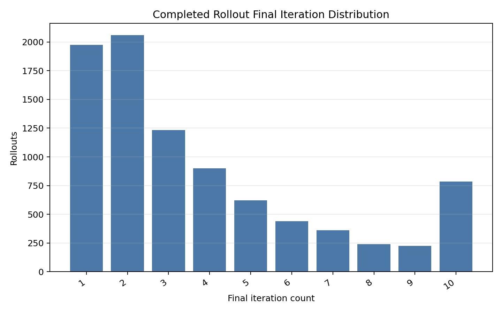
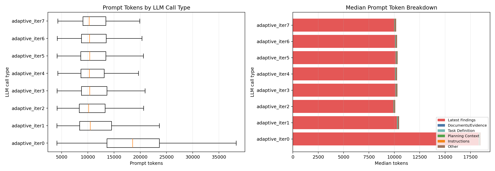
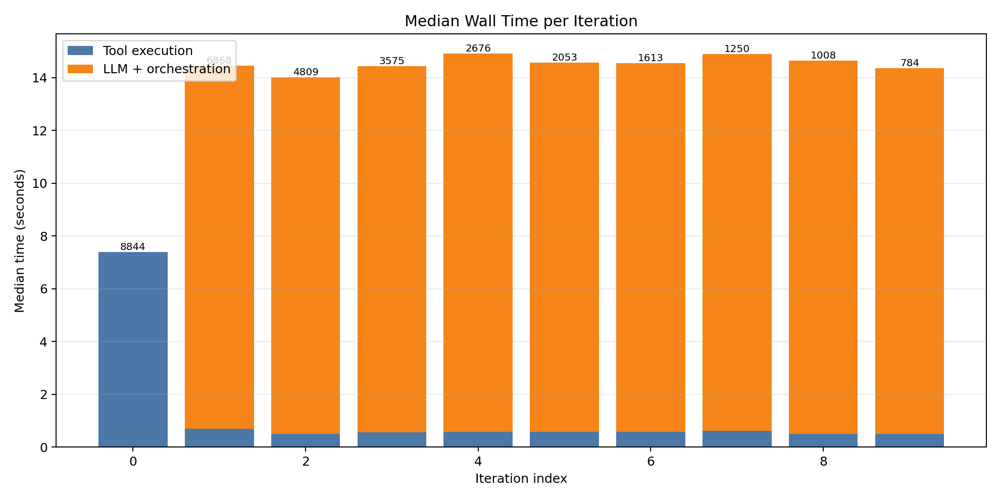
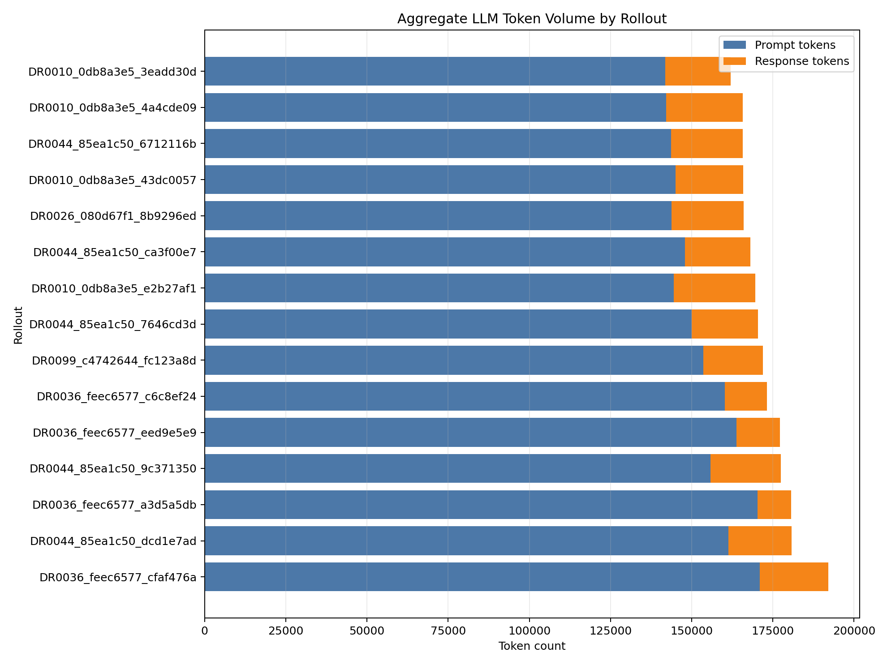
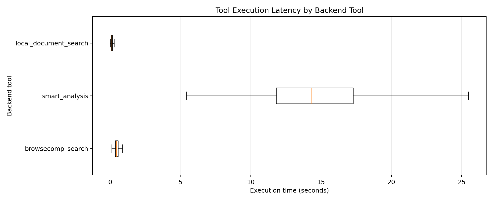

Runtime Analysis Viewer
Run: privacy_agent_qwen3_8b_no_plan_companyctx_planningonly_retrieveonly_v2
This viewer is generated from the saved actor logs and per-rollout session artifacts. Tool timings are exact at the action level; LLM timings are exact overall but only prompt sizes are attributable to specific call types because the actor logs request durations without request IDs under concurrency.
Overview Plots
These are the quickest plots to check for overall throughput shape, rollout duration, and how often the agent keeps iterating.
LLM Latency Distribution
Overall LLM request latency. Exact latency by log_name is not recoverable from the concurrent actor logs.

Rollout Duration Distribution
Completed rollout wall-clock durations, filtered to rollouts with a final report artifact.

Iteration Count Distribution
Final iteration counts across completed rollouts.


Actions Per Rollout
How many tool actions each completed rollout executed before producing a report.

Context + Iteration Behavior
This section is usually the most useful for explaining why the run feels slow. It focuses on prompt size and how each extra iteration adds wall time.
Prompt Tokens by LLM Call Type
Large adaptive prompts dominate; the second panel now shows a median token breakdown by prompt section instead of a fraction.


Rollout Duration by Final Iteration
Completed rollout time split by how many iterations the agent ended up using.

Median Time per Iteration
Median wall time per iteration, split into tool execution versus residual LLM and orchestration time.


LLM Token Usage
These views use the explicit `privacy_agent llm call summary` lines emitted by the rollout adapter. They show response tokens and aggregate token volume by call type and rollout.
Response Token Distribution
Overall response-token distribution across logged privacy-agent LLM calls.

Response Tokens by LLM Call Type
Per-call response-token distribution grouped by log_name.

Token Totals by LLM Call Type
Aggregate prompt versus response token volume for the most expensive call types.

Token Totals by Rollout
Aggregate prompt versus response token volume for the most token-heavy completed rollouts.


Reward Spot Checks
These views recompute reward from the saved report answers against the dataset ground truth, then show a reproducible random sample of rollout reports for manual inspection.
Rollout Reward Distribution
Reward counts recomputed from saved reports and dataset ground truth.

Rollout Reward Stats
| Statistic | Reward |
|---|---|
| count | 8,844 |
| mean | 0.031 |
| median | 0.000 |
| min | 0.000 |
| p90 | 0.000 |
| p95 | 0.200 |
| p99 | 0.500 |
| max | 1.000 |
Reward Distribution
| Reward | Rollouts |
|---|---|
| 0.00 | 8,072 |
| 0.20 | 434 |
| 0.25 | 2 |
| 0.33 | 93 |
| 0.40 | 12 |
| 0.50 | 150 |
| 0.67 | 22 |
| 1.00 | 59 |
DR0001_25cbf112_a6983f04 | reward=0.000 | hops=0/4
Task: DR0001
Iterations: 10 | Actions: 17 | Duration: 234.74 s
Predicted final answer: NOT_FOUND
Ground-truth final answer: Q2 2022
Question preview: 1. In what year did Chaad complete a residency with the Contemporary Art? 2. In what quarter of (1) did Lee's Market launch its LED lighting retrofit program? 3. What percentage reduction in overall lighting energy expenditure resulted from the initiative launched in (2)? 4 (final). In which quarter did Lee's Market achieve a (3) reduction in transit times?
| Hop | Predicted | Ground Truth | Correct | Match |
|---|---|---|---|---|
| 1 | NOT_FOUND | 2022 | false | 0.000 |
| 2 | NOT_FOUND | Q3 2022 | false | 0.000 |
| 3 | NOT_FOUND | 12% | false | 0.000 |
| 4 | NOT_FOUND | Q2 2022 | false | 0.000 |
Report path: /mnt/llmd/results/exps/alexg/reason/privacy_agent_qwen3_8b_no_plan_companyctx_planningonly_retrieveonly_v2/privacy_agent_runs/DR0001_25cbf112_a6983f04/workspace/research_report_20260415_092020.md
# Research Findings: 1. In what year did Chaad complete a residency with the Contemporary Art? 2. In what quarter of (1) did Lee's Market launch its LED lighting retrofit program? 3. What percentage reduction in overall lighting energy expenditure resulted from the initiative launched in (2)? 4 (final). In which quarter did Lee's Market achieve a (3) reduction in transit times? <think> Okay, let's tackle these questions one by one. The user wants short answers with justifications. First, the original research questions are numbered 1 to 4, and the sub-questions Q1 to Q4 are similar but with some dependencies. The available evidence is empty, so I need to check if there's any info provided. Looking at the task context, there's a company description for Lee's Market, but no specific data about Chaad's residency, LED program launch quarters, percentage reductions, or transit time improvements. The available evidence is an empty list, so there's no documentation to reference. For question 1, asking about Chaad's residency year with Contemporary Art—without any documents, I can't find that info. Same for Q2, which depends on Q1's answer (the quarter of (1)). Since there's no data, all answers would be NOT_FOUND. The justifications need to cite DOC:doc_id, but since there are no documents, maybe they should just state that. But the rules say to use only provided evidence. So all answers are NOT_FOUND. The final answer would combine them, but since they're all not found, maybe the final is also NOT_FOUND. I need to make sure each answer is as concise as possible and justify with the lack of evidence. </think> ANSWER_1: NOT_FOUND JUSTIFICATION_1: No evidence provided ANSWER_2: NOT_FOUND JUSTIFICATION_2: No evidence provided ANSWER_3: NOT_FOUND JUSTIFICATION_3: No evidence provided ANSWER_4: NOT_FOUND JUSTIFICATION_4: No evidence provided ANSWER_FINAL: NOT_FOUND JUSTIFICATION_FINAL: Sub-answers rely on missing evidence <|im_end|>
DR0002_4b9e3b87_a899ef06 | reward=0.000 | hops=0/3
Task: DR0002
Iterations: 5 | Actions: 9 | Duration: 102.18 s
Predicted final answer: NOT_FOUND
Ground-truth final answer: 500
Question preview: 1. What percentage of training sessions at Lee's Market were conducted using the proprietary online learning management system as of Q2 2025? 2. As of which quarter in 2025 were (1) of training sessions conducted using the proprietary online learning management system? 3 (final). How many new applications did Lee's Market receive in (2)?
| Hop | Predicted | Ground Truth | Correct | Match |
|---|---|---|---|---|
| 1 | NOT_FOUND | 75% | false | 0.000 |
| 2 | NOT_FOUND | Q2 2025 | false | 0.000 |
| 3 | NOT_FOUND | 500 | false | 0.000 |
Report path: /mnt/llmd/results/exps/alexg/reason/privacy_agent_qwen3_8b_no_plan_companyctx_planningonly_retrieveonly_v2/privacy_agent_runs/DR0002_4b9e3b87_a899ef06/workspace/research_report_20260415_111426.md
# Research Findings: 1. What percentage of training sessions at Lee's Market were conducted using the proprietary online learning management system as of Q2 2025? 2. As of which quarter in 2025 were (1) of training sessions conducted using the proprietary online learning management system? 3 (final). How many new applications did Lee's Market receive in (2)? <think> Okay, let's tackle this step by step. The user has three questions about Lee's Market's training sessions and new applications. The first question is about the percentage of training sessions using their proprietary LMS in Q2 2025. The second asks for the quarter in 2025 when (1) of training sessions were conducted using the LMS. The third is about the number of new applications received in (2). Looking at the available evidence, the document analysis mentions that no relevant documents were found in the vector store. The content of the document says that there's no data to calculate percentages or aggregate training session data. The user's provided evidence is from a document that states the lack of relevant documents, so there's no numerical data here. Since there's no data available, all three questions can't be answered with the given information. The answers should be NOT_FOUND because the required evidence isn't present. Each justification needs to cite the document where this was noted, which is the provided evidence document with doc_id "doc_c12f8e08_1776251589". So, for each answer, I'll have to state NOT_FOUND and reference the document. The final answer would combine that all three questions lack data. But the user might expect answers based on the sub-questions, but since the documents aren't found, the correct response is NOT_FOUND for each. </think> ANSWER_1: NOT_FOUND JUSTIFICATION_1: No relevant documents found ANSWER_2: NOT_FOUND JUSTIFICATION_2: No relevant documents found ANSWER_3: NOT_FOUND JUSTIFICATION_3: No relevant documents found ANSWER_FINAL: NOT_FOUND
DR0003_4c20816c_9183e4bd | reward=0.000 | hops=0/2
Task: DR0003
Iterations: 5 | Actions: 9 | Duration: 101.48 s
Predicted final answer: NOT_FOUND
Ground-truth final answer: the end of Q4 2024
Question preview: 1. What was the renewable energy usage percentage at Lee's Market as of Q1 2024? 2 (final). By when does Lee's Market anticipate achieving a (1) improvement in website performance?
| Hop | Predicted | Ground Truth | Correct | Match |
|---|---|---|---|---|
| 1 | NOT_FOUND | 25% | false | 0.000 |
| 2 | NOT_FOUND | the end of Q4 2024 | false | 0.000 |
Report path: /mnt/llmd/results/exps/alexg/reason/privacy_agent_qwen3_8b_no_plan_companyctx_planningonly_retrieveonly_v2/privacy_agent_runs/DR0003_4c20816c_9183e4bd/workspace/research_report_20260415_065402.md
# Research Findings: 1. What was the renewable energy usage percentage at Lee's Market as of Q1 2024? 2 (final). By when does Lee's Market anticipate achieving a (1) improvement in website performance? <think> Okay, let's tackle these questions. First, the user wants the renewable energy usage percentage at Lee's Market as of Q1 2024. But looking at the available evidence, there's nothing provided. So I can't find that data. The second question is about when they expect a (1) improvement in website performance. Again, no evidence is given here. Since both questions don't have supporting documents, I need to mark them as NOT_FOUND. The final answer should explain that the answers aren't found because there's no evidence. I need to make sure each answer is short and the justifications cite the docs, but since there are none, they'll be NOT_FOUND. </think> ANSWER_1: NOT_FOUND JUSTIFICATION_1: No evidence provided [DOC:] ANSWER_2: NOT_FOUND JUSTIFICATION_2: No evidence provided [DOC:] ANSWER_FINAL: NOT_FOUND JUSTIFICATION_FINAL: Sub-answers lack supporting evidence [DOC:]<|im_end|>
DR0003_98338d1b_968d8f8c | reward=0.000 | hops=0/3
Task: DR0003
Iterations: 6 | Actions: 11 | Duration: 154.79 s
Predicted final answer: NOT_FOUND
Ground-truth final answer: 212500
Question preview: 1. What was the reduction in false positives after implementing the new threat detection system at Lee's Market in Q4 2022? 2. What year did Lee's Market reduce false positives by (1)? 3 (final). What was the monthly average facility maintenance cost for Q4 of (2)?
| Hop | Predicted | Ground Truth | Correct | Match |
|---|---|---|---|---|
| 1 | NOT_FOUND | 40% | false | 0.000 |
| 2 | NOT_FOUND | 2022 | false | 0.000 |
| 3 | 212500 | false | 0.000 |
Report path: /mnt/llmd/results/exps/alexg/reason/privacy_agent_qwen3_8b_no_plan_companyctx_planningonly_retrieveonly_v2/privacy_agent_runs/DR0003_98338d1b_968d8f8c/workspace/research_report_20260415_081151.md
# Research Findings: 1. What was the reduction in false positives after implementing the new threat detection system at Lee's Market in Q4 2022? 2. What year did Lee's Market reduce false positives by (1)? 3 (final). What was the monthly average facility maintenance cost for Q4 of (2)? <think> Okay, let's tackle these questions step by step. The user is asking about the reduction in false positives after implementing a new threat detection system at Lee's Market in Q4 2022. Then the year when this reduction happened, and the monthly average facility maintenance cost for that quarter. Looking at the available evidence, the first document mentions that no relevant documents were found in the vector store. However, there are some recent findings from different actions. The second document also states that no relevant documents were found, but there were some successful searches. However, the actual documents retrieved might not have the specific data needed. For the first question about the reduction in false positives, since no documents are found, the answer would be NOT_FOUND. Similarly, the second question asks for the year, which is likely 2022, but without data, it's also NOT_FOUND. The third question is about the monthly average maintenance cost for Q4 2022, which again, no documents are available. But wait, the user's task context mentions that the company is Lee's Market and the time frame is Q4 2022. Since the documents don't provide the data, all answers would be NOT_FOUND. However, the third question references the year from the second question, which is also NOT_FOUND. So, combining these, all answers would be NOT_FOUND because there's no evidence to support them. </think> ANSWER_1: NOT_FOUND JUSTIFICATION_1: No relevant documents found in vector store ANSWER_2: NOT_FOUND JUSTIFICATION_2: No relevant documents found in vector store ANSWER_FINAL: NOT_FOUND JUSTIFICATION_FINAL: No evidence provided for false positive reduction or maintenanc
DR0026_080d67f1_363180d9 | reward=0.200 | hops=1/5
Task: DR0026
Iterations: 7 | Actions: 16 | Duration: 249.82 s
Predicted final answer: NOT_FOUND
Ground-truth final answer: 30%
Question preview: 1. According to the Corporate Transparency Act information, until what year must domestic and foreign entities formed or registered before January 1, 2024, file their initial beneficial ownership information report with FinCEN? 2. What is the title of the customer service analysis report covering the first months of (1)? 3. What university's innovation campus building was completed in (2)? 4. What year is (3)'s budget of $2.06 billion associated with? 5 (final). What percentage of respondents preferred online shopping with home delivery in the survey conducted in June (4)?
| Hop | Predicted | Ground Truth | Correct | Match |
|---|---|---|---|---|
| 1 | 2025 | 2025 | true | 1.000 |
| 2 | NOT_FOUND | February 2025 | false | 0.000 |
| 3 | NOT_FOUND | Virginia Tech | false | 0.000 |
| 4 | NOT_FOUND | 2023 | false | 0.000 |
| 5 | NOT_FOUND | 30% | false | 0.000 |
Report path: /mnt/llmd/results/exps/alexg/reason/privacy_agent_qwen3_8b_no_plan_companyctx_planningonly_retrieveonly_v2/privacy_agent_runs/DR0026_080d67f1_363180d9/workspace/research_report_20260415_052402.md
# Research Findings: 1. According to the Corporate Transparency Act information, until what year must domestic and foreign entities formed or registered before January 1, 2024, file their initial beneficial ownership information report with FinCEN? 2. What is the title of the customer service analysis report covering the first months of (1)? 3. What university's innovation campus building was completed in (2)? 4. What year is (3)'s budget of $2.06 billion associated with? 5 (final). What percentage of respondents preferred online shopping with home delivery in the survey conducted in June (4)? <think> Okay, let's tackle each question step by step. First, the original research questions are numbered 1-5, and the sub-questions Q1-Q5 are linked. The task is to answer each with a short answer and justification. Starting with Q1: According to the Corporate Transparency Act, until what year must entities formed before Jan 1, 2024, file their initial BOI report? Looking at the evidence, the third document mentions that companies formed before Jan 1, 2024, have until Jan 1, 2025. So the answer should be 2025. Justification from DOC:doc_341a8c2f_1776230392. Q2 asks for the title of the customer service analysis report covering the first months of (1). Wait, (1) refers to the year from Q1, which is 2025. But looking through the evidence, there's a document titled "Frequently Asked Questions" and "Beneficial Ownership Information Reporting Rule Fact Sheet". However, there's no mention of a customer service analysis report. The documents mention reports related to BOI, but not a customer service analysis. Hmm, maybe the second document's title is "Beneficial Ownership Information Reporting Rule Fact Sheet" which might be the report. But the question is about a customer service analysis. Wait, maybe the answer is "Customer Service Analysis Report" but the evidence doesn't specify. Wait, the user's task context mentions Lee's Market, but the available evidence doesn't mention
DR0036_feec6577_c174f064 | reward=0.000 | hops=0/2
Task: DR0036
Iterations: 9 | Actions: 16 | Duration: 167.30 s
Predicted final answer: NOT_FOUND
Ground-truth final answer: Conclusion
Question preview: 1. By what year would workers at dialysis clinics and large health systems reach the $25 hourly minimum wage? 2 (final). What section of the report summarizes the strategies for ensuring success in (1) and beyond?
| Hop | Predicted | Ground Truth | Correct | Match |
|---|---|---|---|---|
| 1 | NOT_FOUND | 2026 | false | 0.000 |
| 2 | NOT_FOUND | Conclusion | false | 0.000 |
Report path: /mnt/llmd/results/exps/alexg/reason/privacy_agent_qwen3_8b_no_plan_companyctx_planningonly_retrieveonly_v2/privacy_agent_runs/DR0036_feec6577_c174f064/workspace/research_report_20260415_031643.md
# Research Findings: 1. By what year would workers at dialysis clinics and large health systems reach the $25 hourly minimum wage? 2 (final). What section of the report summarizes the strategies for ensuring success in (1) and beyond? <think> Okay, let's see. The user has two questions here. The first one is about the year when workers at dialysis clinics and large health systems would reach a $25 hourly minimum wage. The second question asks which section of the report summarizes the strategies for ensuring success in (1) and beyond. Looking at the available evidence, there's only one document provided with a doc_id of "doc_f0d4974a_1776222927". The content of this document mentions that no relevant documents were found in the vector store. However, there are some findings from recent searches, but the document analysis says they aren't relevant. The user's task context is about Elexion Automotive, which designs electric vehicles, but the questions are about minimum wage and report sections. Since the document analysis states no relevant documents were found, there's no evidence here to answer either question. The user's sub-questions are about workers in dialysis clinics and health systems, which don't seem related to Elexion Automotive's focus on electric vehicles. The provided evidence doesn't mention anything about minimum wage increases or report sections related to that. Therefore, both answers would be NOT_FOUND because there's no relevant information in the given documents to answer the questions. The justification would cite the document analysis indicating no relevant documents were found. </think> ANSWER_1: NOT_FOUND JUSTIFICATION_1: No relevant documents found ANSWER_2: NOT_FOUND JUSTIFICATION_2: No relevant documents found ANSWER_FINAL: NOT_FOUND JUSTIFICATION_FINAL: No evidence addresses wage timelines or report sections <|im_end|>
DR0044_85ea1c50_d9a78c89 | reward=0.000 | hops=0/4
Task: DR0044
Iterations: 6 | Actions: 11 | Duration: 203.90 s
Predicted final answer: NOT_FOUND
Ground-truth final answer: John Doe
Question preview: 1. What was the percentage of users who found the website navigation intuitive at MediConn Solutions in 2024? 2. What year is associated with the (1) sensitivity of lymphoscintigraphy for lymphedema diagnosis? 3. Where was the third edition of Plastic and Reconstructive Surgery Board Review published in (2)? 4 (final). What meeting does John schedule to discuss leveraging the growing demand for virtual healthcare services in (3)?
| Hop | Predicted | Ground Truth | Correct | Match |
|---|---|---|---|---|
| 1 | NOT_FOUND | 92% | false | 0.000 |
| 2 | NOT_FOUND | 2016 | false | 0.000 |
| 3 | NOT_FOUND | Ontario | false | 0.000 |
| 4 | NOT_FOUND | John Doe | false | 0.000 |
Report path: /mnt/llmd/results/exps/alexg/reason/privacy_agent_qwen3_8b_no_plan_companyctx_planningonly_retrieveonly_v2/privacy_agent_runs/DR0044_85ea1c50_d9a78c89/workspace/research_report_20260415_103103.md
# Research Findings: 1. What was the percentage of users who found the website navigation intuitive at MediConn Solutions in 2024? 2. What year is associated with the (1) sensitivity of lymphoscintigraphy for lymphedema diagnosis? 3. Where was the third edition of Plastic and Reconstructive Surgery Board Review published in (2)? 4 (final). What meeting does John schedule to discuss leveraging the growing demand for virtual healthcare services in (3)? <think> Okay, let's tackle this query step by step. The user has four questions to answer, each requiring a short answer and a justification. The context provided is about MediConn Solutions and some research questions related to their services. The evidence given is from a document that mentions no relevant documents were found. Starting with the first question: the percentage of users who found the website navigation intuitive at MediConn Solutions in 2024. The evidence states that no relevant documents were found, so I can't find the answer here. The answer should be NOT_FOUND with the justification citing the document that mentions no data. Second question: the year associated with the sensitivity of lymphoscintigraphy for lymphedema diagnosis. Again, the evidence doesn't have any data, so NOT_FOUND, citing the same document. Third question: Where the third edition of the Plastic and Reconstructive Surgery Board Review was published in (2). The evidence says no relevant documents were found, so NOT_FOUND again. Fourth question: What meeting John schedules to discuss virtual healthcare services in (3). The context doesn't provide info on meetings, so also NOT_FOUND. Since all sub-questions rely on the same evidence which lacks data, each answer is NOT_FOUND. The final answer should combine these, but since they all are NOT_FOUND, the final justification will note the lack of relevant documents. </think> ANSWER_1: NOT_FOUND JUSTIFICATION_1: No numerical data found ANSWER_2: NOT_FOUND JUSTIFICATION_2:
DR0099_c4742644_e687b419 | reward=0.000 | hops=0/2
Task: DR0099
Iterations: 5 | Actions: 9 | Duration: 163.81 s
Predicted final answer: NOT_FOUND
Ground-truth final answer: Elexion
Question preview: 1. What year is the penultimate year of the Muppet Babies broadcast run? 2 (final). Which company sold exactly (1) electric vehicles?
| Hop | Predicted | Ground Truth | Correct | Match |
|---|---|---|---|---|
| 1 | NOT_FOUND | 1990 | false | 0.000 |
| 2 | NOT_FOUND | Elexion | false | 0.000 |
Report path: /mnt/llmd/results/exps/alexg/reason/privacy_agent_qwen3_8b_no_plan_companyctx_planningonly_retrieveonly_v2/privacy_agent_runs/DR0099_c4742644_e687b419/workspace/research_report_20260415_100913.md
# Research Findings: 1. What year is the penultimate year of the Muppet Babies broadcast run? 2 (final). Which company sold exactly (1) electric vehicles? <think> Okay, let's tackle these questions. First, the original research questions are about the penultimate year of Muppet Babies and a company that sold exactly one electric vehicle. The context mentions Elexion Automotive as the company in the EV sector. Looking at the evidence provided, the user tried to access some Excel files related to Elexion Automotive's EV sales and battery data. However, the content excerpts just mention that the openpyxl library isn't available, so the files couldn't be processed. There's no actual data retrieved here. For the first question about Muppet Babies, the evidence doesn't mention anything about TV broadcast years. The only info is about Elexion Automotive. So I can't find the answer here. The second question asks which company sold exactly one EV. The context says Elexion is in the EV industry, but the evidence doesn't provide sales numbers. The local_document_search results don't have relevant data. So there's no info on how many EVs they sold. Since there's no data in the provided evidence to answer either question, both answers would be NOT_FOUND. The justifications need to reference the documents, but since the evidence doesn't help, I have to note that. </think> ANSWER_1: NOT_FOUND JUSTIFICATION_1: No evidence about Muppet Babies years ANSWER_2: NOT_FOUND JUSTIFICATION_2: No EV sales data available ANSWER_FINAL: NOT_FOUND JUSTIFICATION_FINAL: Evidence lacks required data for both questions <|im_end|>
Tool Timing
These plots use per-action execution times stored in each rollout's final action plan, so this breakdown is much more precise than the text logs alone.
Tool Latency by Action Type
Distribution of per-action execution time using action categories from the final action plan.

Tool Latency by Backend
Distribution of execution time grouped by the backend tool actually used.


Tool Counts by Action Type
Volume of completed tool calls by action type.

Tool Counts by Backend
Volume of completed tool calls by backend tool.

Summary Tables
Counts
| Metric | Value |
|---|---|
| llm_requests | 65,574 |
| llm_call_records | 65,563 |
| prompt_records | 22,436 |
| reward_records | 8,844 |
| rollouts_all | 8,864 |
| rollouts_completed_with_report | 8,844 |
| actions_completed_with_report | 59,793 |
| iteration_records_completed_with_report | 33,480 |
LLM Request Latency
| Statistic | Seconds |
|---|---|
| count | 65,574 |
| mean | 14.72 |
| median | 13.18 |
| min | 0.190 |
| p90 | 24.36 |
| p95 | 29.83 |
| p99 | 42.94 |
| max | 75.42 |
Logged Prompt Tokens
| Statistic | Tokens |
|---|---|
| count | 22,436 |
| mean | 14,443.68 |
| median | 12,667.00 |
| min | 4,096 |
| p90 | 23,873.50 |
| p95 | 26,266.50 |
| p99 | 28,992.50 |
| max | 40,121 |
Logged Response Tokens
| Statistic | Tokens |
|---|---|
| count | 65,563 |
| mean | 943.68 |
| median | 850 |
| min | 132 |
| p90 | 1,530.00 |
| p95 | 1,859.00 |
| p99 | 2,739.38 |
| max | 4,102 |
Logged Total Tokens
| Statistic | Tokens |
|---|---|
| count | 65,563 |
| mean | 6,722.59 |
| median | 2,564 |
| min | 604 |
| p90 | 18,656.60 |
| p95 | 23,335.70 |
| p99 | 28,873.66 |
| max | 37,727 |
Rollout Reward
| Statistic | Reward |
|---|---|
| count | 8,844 |
| mean | 0.031 |
| median | 0.000 |
| min | 0.000 |
| p90 | 0.000 |
| p95 | 0.200 |
| p99 | 0.500 |
| max | 1.000 |
Completed Rollout Duration
| Statistic | Seconds |
|---|---|
| count | 8,844 |
| mean | 91.05 |
| median | 63.00 |
| min | 6.405 |
| p90 | 203.36 |
| p95 | 246.18 |
| p99 | 321.16 |
| max | 475.16 |
LLM Token Usage by Call Type
| Log name | call_count | captured_call_count | prompt_tokens | response_tokens | total_tokens | mean_prompt_tokens | mean_response_tokens |
|---|---|---|---|---|---|---|---|
| adaptive_iter0 | 8,942 | 8,942 | 166,456,442 | 7,738,202 | 174,194,644 | 18,615.12 | 865.38 |
| adaptive_iter1 | 6,940 | 6,940 | 58,553,100 | 6,242,807 | 64,795,907 | 8,437.05 | 899.54 |
| adaptive_iter2 | 4,859 | 4,859 | 31,965,571 | 4,520,196 | 36,485,767 | 6,578.63 | 930.27 |
| adaptive_iter3 | 3,603 | 3,603 | 25,508,013 | 3,415,385 | 28,923,398 | 7,079.66 | 947.93 |
| analysis_final_synthesis | 13,837 | 0 | 13,232,732 | 13,691,197 | 26,923,929 | 956.33 | 989.46 |
| action_plan_fallback | 8,933 | 8,933 | 9,868,989 | 12,523,294 | 22,392,283 | 1,104.78 | 1,401.91 |
| adaptive_iter4 | 2,688 | 2,688 | 18,965,674 | 2,522,809 | 21,488,483 | 7,055.68 | 938.55 |
| adaptive_iter5 | 2,066 | 2,066 | 14,316,746 | 1,932,764 | 16,249,510 | 6,929.69 | 935.51 |
| adaptive_iter6 | 1,624 | 1,624 | 11,198,299 | 1,561,967 | 12,760,266 | 6,895.50 | 961.80 |
| report_qa | 8,836 | 0 | 7,813,281 | 4,649,917 | 12,463,198 | 884.26 | 526.25 |
| adaptive_iter7 | 1,262 | 1,262 | 8,552,279 | 1,194,841 | 9,747,120 | 6,776.77 | 946.78 |
| adaptive_iter8 | 1,011 | 1,011 | 6,935,451 | 929,781 | 7,865,232 | 6,859.99 | 919.66 |
LLM Token Usage by Rollout
| Rollout | call_count | captured_call_count | prompt_tokens | response_tokens | total_tokens | mean_prompt_tokens | mean_response_tokens |
|---|---|---|---|---|---|---|---|
| DR0036_feec6577_cfaf476a | 19 | 12 | 171,032 | 21,096 | 192,128 | 9,001.68 | 1,110.32 |
| DR0044_85ea1c50_dcd1e7ad | 17 | 12 | 161,277 | 19,488 | 180,765 | 9,486.88 | 1,146.35 |
| DR0036_feec6577_a3d5a5db | 13 | 11 | 170,221 | 10,354 | 180,575 | 13,093.92 | 796.46 |
| DR0044_85ea1c50_9c371350 | 16 | 11 | 155,818 | 21,624 | 177,442 | 9,738.62 | 1,351.50 |
| DR0036_feec6577_eed9e5e9 | 15 | 12 | 163,864 | 13,259 | 177,123 | 10,924.27 | 883.93 |
| DR0036_feec6577_c6c8ef24 | 15 | 13 | 160,229 | 12,948 | 173,177 | 10,681.93 | 863.20 |
| DR0099_c4742644_fc123a8d | 21 | 12 | 153,642 | 18,263 | 171,905 | 7,316.29 | 869.67 |
| DR0044_85ea1c50_7646cd3d | 14 | 12 | 149,988 | 20,492 | 170,480 | 10,713.43 | 1,463.71 |
| DR0010_0db8a3e5_e2b27af1 | 23 | 12 | 144,492 | 25,061 | 169,553 | 6,282.26 | 1,089.61 |
| DR0044_85ea1c50_ca3f00e7 | 16 | 10 | 147,912 | 20,230 | 168,142 | 9,244.50 | 1,264.38 |
| DR0026_080d67f1_8b9296ed | 15 | 11 | 143,784 | 22,171 | 165,955 | 9,585.60 | 1,478.07 |
| DR0010_0db8a3e5_43dc0057 | 19 | 11 | 144,970 | 20,834 | 165,804 | 7,630.00 | 1,096.53 |
Completed Action Execution
| Statistic | Seconds |
|---|---|
| count | 59,793 |
| mean | 3.801 |
| median | 0.473 |
| min | 0.003 |
| p90 | 15.01 |
| p95 | 17.88 |
| p99 | 24.52 |
| max | 103.79 |
Iteration Count Distribution
| Final iteration | Rollouts |
|---|---|
| 1 | 1,976 |
| 2 | 2,059 |
| 3 | 1,234 |
| 4 | 899 |
| 5 | 623 |
| 6 | 440 |
| 7 | 363 |
| 8 | 242 |
| 9 | 224 |
| 10 | 784 |
Prompt Count by Log Name
| Log name | Prompt summaries |
|---|---|
| adaptive_iter0 | 8,770 |
| adaptive_iter1 | 4,516 |
| adaptive_iter2 | 2,381 |
| adaptive_iter3 | 1,891 |
| adaptive_iter4 | 1,422 |
| adaptive_iter5 | 1,077 |
| adaptive_iter6 | 836 |
| adaptive_iter7 | 618 |
| adaptive_iter8 | 521 |
| adaptive_iter9 | 386 |
| analysis_synthesis | 15 |
| analysis_final_synthesis | 3 |
Action Timing by Type
| Action type | count | mean | median | p90 | p95 | p99 | max |
|---|---|---|---|---|---|---|---|
| web_search | 33,365 | 0.487 | 0.466 | 0.702 | 0.812 | 1.155 | 5.855 |
| data_analysis | 13,821 | 15.14 | 14.34 | 20.85 | 23.93 | 33.27 | 103.79 |
| local_document_search | 12,607 | 0.145 | 0.122 | 0.226 | 0.272 | 0.406 | 3.639 |
Action Timing by Backend Tool
| Backend | count | mean | median | p90 | p95 | p99 | max |
|---|---|---|---|---|---|---|---|
| browsecomp_search | 33,365 | 0.487 | 0.466 | 0.702 | 0.812 | 1.155 | 5.855 |
| smart_analysis | 13,821 | 15.14 | 14.34 | 20.85 | 23.93 | 33.27 | 103.79 |
| local_document_search | 12,607 | 0.145 | 0.122 | 0.226 | 0.272 | 0.406 | 3.639 |
Preview: rollouts.csv
| rollout_id | has_report | report_path | start_timestamp | end_timestamp | duration_s | current_iteration | max_iterations | total_actions | completed_actions | failed_actions | pending_actions | tool_exec_time_s | non_tool_time_s |
|---|---|---|---|---|---|---|---|---|---|---|---|---|---|
| DR0001_06a7f3db_004eec27 | true | /mnt/llmd/results/exps/alexg/reason/privacy_agent_qwen3_8b_no_plan_companyctx_planningonly_retrieveonly_v2/privacy_agent_runs/DR0001_06a7f3db_004eec27/workspace/research_report_20260415_043035.md | 2026-04-15T04:30:10.996663 | 2026-04-15T04:30:35 | 24.00 | 1 | 10 | 3 | 3 | 0 | 0 | 8.398 | 15.61 |
| DR0001_06a7f3db_010f1196 | true | /mnt/llmd/results/exps/alexg/reason/privacy_agent_qwen3_8b_no_plan_companyctx_planningonly_retrieveonly_v2/privacy_agent_runs/DR0001_06a7f3db_010f1196/workspace/research_report_20260415_072506.md | 2026-04-15T07:23:25.086913 | 2026-04-15T07:25:06 | 100.91 | 6 | 10 | 11 | 11 | 0 | 0 | 30.49 | 70.42 |
| DR0001_06a7f3db_01e6a31f | true | /mnt/llmd/results/exps/alexg/reason/privacy_agent_qwen3_8b_no_plan_companyctx_planningonly_retrieveonly_v2/privacy_agent_runs/DR0001_06a7f3db_01e6a31f/workspace/research_report_20260415_044617.md | 2026-04-15T04:45:48.307404 | 2026-04-15T04:46:17 | 28.69 | 1 | 10 | 3 | 3 | 0 | 0 | 11.96 | 16.73 |
| DR0001_06a7f3db_0282b1e4 | true | /mnt/llmd/results/exps/alexg/reason/privacy_agent_qwen3_8b_no_plan_companyctx_planningonly_retrieveonly_v2/privacy_agent_runs/DR0001_06a7f3db_0282b1e4/workspace/research_report_20260415_093947.md | 2026-04-15T09:38:09.796438 | 2026-04-15T09:39:47 | 97.20 | 6 | 10 | 8 | 8 | 0 | 0 | 1.813 | 95.39 |
| DR0001_06a7f3db_02b0b5c8 | true | /mnt/llmd/results/exps/alexg/reason/privacy_agent_qwen3_8b_no_plan_companyctx_planningonly_retrieveonly_v2/privacy_agent_runs/DR0001_06a7f3db_02b0b5c8/workspace/research_report_20260415_100145.md | 2026-04-15T09:59:15.015533 | 2026-04-15T10:01:45 | 149.98 | 9 | 10 | 13 | 13 | 0 | 0 | 43.83 | 106.16 |
| DR0001_06a7f3db_03000fe6 | true | /mnt/llmd/results/exps/alexg/reason/privacy_agent_qwen3_8b_no_plan_companyctx_planningonly_retrieveonly_v2/privacy_agent_runs/DR0001_06a7f3db_03000fe6/workspace/research_report_20260415_075415.md | 2026-04-15T07:50:59.455495 | 2026-04-15T07:54:15 | 195.54 | 10 | 10 | 17 | 16 | 0 | 1 | 60.14 | 135.41 |
| DR0001_06a7f3db_034118d0 | true | /mnt/llmd/results/exps/alexg/reason/privacy_agent_qwen3_8b_no_plan_companyctx_planningonly_retrieveonly_v2/privacy_agent_runs/DR0001_06a7f3db_034118d0/workspace/research_report_20260415_050636.md | 2026-04-15T05:05:57.472625 | 2026-04-15T05:06:36 | 38.53 | 1 | 10 | 3 | 3 | 0 | 0 | 21.21 | 17.31 |
| DR0001_06a7f3db_04c83886 | true | /mnt/llmd/results/exps/alexg/reason/privacy_agent_qwen3_8b_no_plan_companyctx_planningonly_retrieveonly_v2/privacy_agent_runs/DR0001_06a7f3db_04c83886/workspace/research_report_20260415_103153.md | 2026-04-15T10:31:14.952918 | 2026-04-15T10:31:53 | 38.05 | 1 | 10 | 3 | 3 | 0 | 0 | 18.24 | 19.81 |
| DR0001_06a7f3db_053c34e0 | true | /mnt/llmd/results/exps/alexg/reason/privacy_agent_qwen3_8b_no_plan_companyctx_planningonly_retrieveonly_v2/privacy_agent_runs/DR0001_06a7f3db_053c34e0/workspace/research_report_20260415_062209.md | 2026-04-15T06:21:31.850304 | 2026-04-15T06:22:09 | 37.15 | 1 | 10 | 3 | 3 | 0 | 0 | 18.18 | 18.97 |
| DR0001_06a7f3db_05b906f9 | true | /mnt/llmd/results/exps/alexg/reason/privacy_agent_qwen3_8b_no_plan_companyctx_planningonly_retrieveonly_v2/privacy_agent_runs/DR0001_06a7f3db_05b906f9/workspace/research_report_20260415_032619.md | 2026-04-15T03:25:30.747177 | 2026-04-15T03:26:19 | 48.25 | 3 | 10 | 6 | 6 | 0 | 0 | 10.99 | 37.26 |
| DR0001_06a7f3db_065fe515 | true | /mnt/llmd/results/exps/alexg/reason/privacy_agent_qwen3_8b_no_plan_companyctx_planningonly_retrieveonly_v2/privacy_agent_runs/DR0001_06a7f3db_065fe515/workspace/research_report_20260415_103232.md | 2026-04-15T10:31:18.163513 | 2026-04-15T10:32:32 | 73.84 | 5 | 10 | 8 | 8 | 0 | 0 | 20.60 | 53.23 |
| DR0001_06a7f3db_06e22c99 | true | /mnt/llmd/results/exps/alexg/reason/privacy_agent_qwen3_8b_no_plan_companyctx_planningonly_retrieveonly_v2/privacy_agent_runs/DR0001_06a7f3db_06e22c99/workspace/research_report_20260415_034107.md | 2026-04-15T03:40:17.686355 | 2026-04-15T03:41:07 | 49.31 | 3 | 10 | 6 | 6 | 0 | 0 | 15.85 | 33.46 |
| DR0001_06a7f3db_070e1323 | true | /mnt/llmd/results/exps/alexg/reason/privacy_agent_qwen3_8b_no_plan_companyctx_planningonly_retrieveonly_v2/privacy_agent_runs/DR0001_06a7f3db_070e1323/workspace/research_report_20260415_044424.md | 2026-04-15T04:43:39.147038 | 2026-04-15T04:44:24 | 44.85 | 2 | 10 | 4 | 4 | 0 | 0 | 10.40 | 34.46 |
| DR0001_06a7f3db_0724be5b | true | /mnt/llmd/results/exps/alexg/reason/privacy_agent_qwen3_8b_no_plan_companyctx_planningonly_retrieveonly_v2/privacy_agent_runs/DR0001_06a7f3db_0724be5b/workspace/research_report_20260415_075126.md | 2026-04-15T07:50:59.665418 | 2026-04-15T07:51:26 | 26.33 | 1 | 10 | 3 | 3 | 0 | 0 | 11.72 | 14.61 |
| DR0001_06a7f3db_076e6c36 | true | /mnt/llmd/results/exps/alexg/reason/privacy_agent_qwen3_8b_no_plan_companyctx_planningonly_retrieveonly_v2/privacy_agent_runs/DR0001_06a7f3db_076e6c36/workspace/research_report_20260415_082751.md | 2026-04-15T08:27:03.451501 | 2026-04-15T08:27:51 | 47.55 | 2 | 10 | 4 | 4 | 0 | 0 | 13.89 | 33.65 |
Preview: actions.csv
| rollout_id | has_report | action_id | action_type | backend_tool | status | execution_time_s | iteration_completed | completion_time | created_from_research_step | preferred_tool |
|---|---|---|---|---|---|---|---|---|---|---|
| DR0001_06a7f3db_004eec27 | true | fallback_action_0 | local_document_search | local_document_search | completed | 0.059 | 0 | 2026-04-15T04:30:11.057182 | fallback_generation | LocalFileSearchTool |
| DR0001_06a7f3db_004eec27 | true | fallback_action_1 | web_search | browsecomp_search | completed | 0.444 | 0 | 2026-04-15T04:30:11.500946 | fallback_generation | BrowseCompSearchTool |
| DR0001_06a7f3db_004eec27 | true | fallback_action_2 | data_analysis | smart_analysis | completed | 7.895 | 0 | 2026-04-15T04:30:19.396657 | fallback_generation | SmartAnalysisTool |
| DR0001_06a7f3db_010f1196 | true | fallback_action_0 | local_document_search | local_document_search | completed | 0.078 | 0 | 2026-04-15T07:23:25.167293 | fallback_generation | LocalFileSearchTool |
| DR0001_06a7f3db_010f1196 | true | fallback_action_1 | web_search | browsecomp_search | completed | 0.494 | 0 | 2026-04-15T07:23:25.661471 | fallback_generation | BrowseCompSearchTool |
| DR0001_06a7f3db_010f1196 | true | fallback_action_2 | data_analysis | smart_analysis | completed | 18.91 | 0 | 2026-04-15T07:23:44.574146 | fallback_generation | SmartAnalysisTool |
| DR0001_06a7f3db_010f1196 | true | adaptive_0_local_document_search_search_for_unpr_0 | local_document_search | local_document_search | completed | 0.226 | 1 | 2026-04-15T07:23:56.163417 | LocalFileSearchTool | |
| DR0001_06a7f3db_010f1196 | true | adaptive_0_web_search_find_official_c_1 | web_search | browsecomp_search | completed | 0.488 | 1 | 2026-04-15T07:23:56.651205 | BrowseCompSearchTool | |
| DR0001_06a7f3db_010f1196 | true | adaptive_1_local_document_search_search_for_inte_1 | local_document_search | local_document_search | completed | 0.115 | 2 | 2026-04-15T07:24:10.116226 | LocalFileSearchTool | |
| DR0001_06a7f3db_010f1196 | true | adaptive_2_web_search_search_for_the__0 | web_search | browsecomp_search | completed | 0.654 | 3 | 2026-04-15T07:24:26.303778 | BrowseCompSearchTool | |
| DR0001_06a7f3db_010f1196 | true | adaptive_2_local_document_search_search_for_fsma_1 | local_document_search | local_document_search | completed | 0.098 | 3 | 2026-04-15T07:24:26.402592 | LocalFileSearchTool | |
| DR0001_06a7f3db_010f1196 | true | adaptive_3_web_search_search_for_lee'_0 | web_search | browsecomp_search | completed | 0.321 | 4 | 2026-04-15T07:24:48.550641 | browsecomp_search | |
| DR0001_06a7f3db_010f1196 | true | adaptive_3_data_analysis_analyze_quarter_1 | data_analysis | smart_analysis | completed | 8.993 | 4 | 2026-04-15T07:24:48.229139 | SmartAnalysisTool | |
| DR0001_06a7f3db_010f1196 | true | adaptive_4_local_document_search_search_for_inte_0 | local_document_search | local_document_search | completed | 0.113 | 5 | 2026-04-15T07:24:55.841362 | LocalFileSearchTool | |
| DR0001_06a7f3db_01e6a31f | true | fallback_action_0 | web_search | browsecomp_search | completed | 0.562 | 0 | 2026-04-15T04:45:48.871471 | fallback_generation | BrowseCompSearchTool |
Preview: iterations.csv
| rollout_id | has_report | iteration | action_count | wall_time_s | tool_time_s | non_tool_time_s |
|---|---|---|---|---|---|---|
| DR0001_06a7f3db_004eec27 | true | 0 | 3 | 8.400 | 8.398 | 0.002 |
| DR0001_06a7f3db_010f1196 | true | 0 | 3 | 19.49 | 19.48 | 0.002 |
| DR0001_06a7f3db_010f1196 | true | 1 | 2 | 12.08 | 0.714 | 11.36 |
| DR0001_06a7f3db_010f1196 | true | 2 | 1 | 13.47 | 0.115 | 13.35 |
| DR0001_06a7f3db_010f1196 | true | 3 | 2 | 16.29 | 0.753 | 15.53 |
| DR0001_06a7f3db_010f1196 | true | 4 | 2 | 22.15 | 9.314 | 12.83 |
| DR0001_06a7f3db_010f1196 | true | 5 | 1 | 7.291 | 0.113 | 7.177 |
| DR0001_06a7f3db_01e6a31f | true | 0 | 3 | 11.97 | 11.96 | 0.003 |
| DR0001_06a7f3db_0282b1e4 | true | 0 | 3 | 0.660 | 0.646 | 0.015 |
| DR0001_06a7f3db_0282b1e4 | true | 1 | 1 | 26.82 | 0.186 | 26.64 |
| DR0001_06a7f3db_0282b1e4 | true | 2 | 1 | 15.16 | 0.468 | 14.69 |
| DR0001_06a7f3db_0282b1e4 | true | 3 | 1 | 14.60 | 0.095 | 14.51 |
| DR0001_06a7f3db_0282b1e4 | true | 4 | 1 | 11.01 | 0.339 | 10.67 |
| DR0001_06a7f3db_0282b1e4 | true | 5 | 1 | 9.919 | 0.079 | 9.840 |
| DR0001_06a7f3db_02b0b5c8 | true | 0 | 3 | 17.30 | 17.30 | 0.002 |
Preview: prompt_records.csv
| timestamp | log_name | prompt_tokens | prompt_chars | latest_findings_tokens | latest_findings_chars | instructions_tokens | planning_context_tokens | task_definition_tokens | documents_or_evidence_tokens | reporting_context_tokens | other_tokens |
|---|---|---|---|---|---|---|---|---|---|---|---|
| 2026-04-15T02:44:59.483000 | adaptive_iter0 | 9,216 | 37,264 | 8,998 | 36,246 | 0 | 17 | 45 | 0 | 0 | 129 |
| 2026-04-15T02:45:01.748000 | adaptive_iter0 | 16,805 | 69,433 | 16,593 | 68,477 | 0 | 17 | 44 | 0 | 0 | 123 |
| 2026-04-15T02:45:03.141000 | adaptive_iter0 | 28,026 | 101,520 | 27,784 | 100,400 | 0 | 17 | 75 | 0 | 0 | 123 |
| 2026-04-15T02:45:04.306000 | adaptive_iter0 | 10,102 | 39,592 | 9,881 | 38,573 | 0 | 17 | 48 | 0 | 0 | 129 |
| 2026-04-15T02:45:05.165000 | adaptive_iter0 | 23,654 | 94,570 | 23,366 | 93,210 | 0 | 17 | 121 | 0 | 0 | 123 |
| 2026-04-15T02:45:05.555000 | adaptive_iter0 | 18,272 | 69,121 | 18,056 | 68,143 | 0 | 17 | 44 | 0 | 0 | 128 |
| 2026-04-15T02:45:08.679000 | adaptive_iter0 | 12,879 | 43,628 | 12,695 | 42,891 | 0 | 17 | 31 | 0 | 0 | 109 |
| 2026-04-15T02:45:09.519000 | adaptive_iter0 | 11,182 | 36,989 | 10,964 | 36,011 | 0 | 17 | 51 | 0 | 0 | 123 |
| 2026-04-15T02:45:09.963000 | adaptive_iter0 | 10,907 | 46,690 | 10,671 | 45,573 | 0 | 17 | 63 | 0 | 0 | 129 |
| 2026-04-15T02:45:10.121000 | adaptive_iter0 | 23,416 | 81,567 | 23,181 | 80,504 | 0 | 17 | 63 | 0 | 0 | 128 |
| 2026-04-15T02:45:13.936000 | adaptive_iter0 | 25,623 | 105,901 | 25,372 | 104,676 | 0 | 17 | 92 | 0 | 0 | 117 |
| 2026-04-15T02:45:16.265000 | adaptive_iter0 | 14,070 | 51,489 | 13,853 | 50,488 | 0 | 17 | 44 | 0 | 0 | 129 |
| 2026-04-15T02:45:16.488000 | adaptive_iter0 | 11,882 | 41,168 | 11,665 | 40,155 | 0 | 17 | 53 | 0 | 0 | 122 |
| 2026-04-15T02:45:18.506000 | adaptive_iter1 | 8,708 | 32,469 | 8,487 | 31,450 | 0 | 17 | 48 | 0 | 0 | 129 |
| 2026-04-15T02:45:20.195000 | adaptive_iter0 | 19,048 | 82,239 | 18,812 | 81,124 | 0 | 17 | 69 | 0 | 0 | 123 |
Preview: llm_call_records.csv
| timestamp | rollout_id | task_id | chain_id | log_name | prompt_tokens | output_tokens | total_tokens | capture_mode | captured | requested_model | has_report | rollout_duration_s | rollout_iteration_count |
|---|---|---|---|---|---|---|---|---|---|---|---|---|---|
| 2026-04-15T02:44:56.644000 | DR0003_4c20816c_e10586fb | DR0003 | 4c20816c | action_plan_fallback | 1,091 | 726 | 1,817 | planning_only | true | /mnt/llmd/base_models/Qwen3-8B | true | 53.32 | 3 |
| 2026-04-15T02:44:57.686000 | DR0099_c4742644_01819bcb | DR0099 | c4742644 | action_plan_fallback | 1,059 | 758 | 1,817 | planning_only | true | /mnt/llmd/base_models/Qwen3-8B | true | 47.30 | 2 |
| 2026-04-15T02:44:58.630000 | DR0001_06a7f3db_bb06192f | DR0001 | 06a7f3db | action_plan_fallback | 1,092 | 936 | 2,028 | planning_only | true | /mnt/llmd/base_models/Qwen3-8B | true | 43.35 | 3 |
| 2026-04-15T02:44:58.745000 | DR0003_98338d1b_4d44435d | DR0003 | 98338d1b | action_plan_fallback | 1,110 | 930 | 2,040 | planning_only | true | /mnt/llmd/base_models/Qwen3-8B | true | 26.23 | 1 |
| 2026-04-15T02:44:59.298000 | DR0073_fe2c0014_101322f9 | DR0073 | fe2c0014 | action_plan_fallback | 1,093 | 1,021 | 2,114 | planning_only | true | /mnt/llmd/base_models/Qwen3-8B | true | 33.68 | 2 |
| 2026-04-15T02:45:00.293000 | DR0079_dbef5af1_3998a209 | DR0079 | dbef5af1 | action_plan_fallback | 1,086 | 1,006 | 2,092 | planning_only | true | /mnt/llmd/base_models/Qwen3-8B | true | 80.69 | 5 |
| 2026-04-15T02:45:00.296000 | DR0012_736e7d35_5867b8fb | DR0012 | 736e7d35 | action_plan_fallback | 1,105 | 1,075 | 2,180 | planning_only | true | /mnt/llmd/base_models/Qwen3-8B | true | 19.70 | 1 |
| 2026-04-15T02:45:00.385000 | DR0005_51277225_bd1b5599 | DR0005 | 51277225 | action_plan_fallback | 1,092 | 1,027 | 2,119 | planning_only | true | /mnt/llmd/base_models/Qwen3-8B | true | 23.61 | 1 |
| 2026-04-15T02:45:00.672000 | DR0002_4b9e3b87_61cb8a21 | DR0002 | 4b9e3b87 | action_plan_fallback | 1,122 | 1,036 | 2,158 | planning_only | true | /mnt/llmd/base_models/Qwen3-8B | true | 48.31 | 3 |
| 2026-04-15T02:45:01.634000 | DR0008_fdac8c9a_4d5e4d8d | DR0008 | fdac8c9a | action_plan_fallback | 1,092 | 1,198 | 2,290 | planning_only | true | /mnt/llmd/base_models/Qwen3-8B | true | 34.36 | 1 |
| 2026-04-15T02:45:02.393000 | DR0036_feec6577_092d2fed | DR0036 | feec6577 | action_plan_fallback | 1,088 | 1,167 | 2,255 | planning_only | true | /mnt/llmd/base_models/Qwen3-8B | true | 36.59 | 1 |
| 2026-04-15T02:45:02.662000 | DR0077_b10de00c_4e201d0d | DR0077 | b10de00c | action_plan_fallback | 1,111 | 1,242 | 2,353 | planning_only | true | /mnt/llmd/base_models/Qwen3-8B | true | 30.33 | 1 |
| 2026-04-15T02:45:02.666000 | DR0016_43e8e9df_c9ddb712 | DR0016 | 43e8e9df | action_plan_fallback | 1,095 | 1,237 | 2,332 | planning_only | true | /mnt/llmd/base_models/Qwen3-8B | true | 41.33 | 2 |
| 2026-04-15T02:45:02.785000 | DR0026_080d67f1_d8909a2e | DR0026 | 080d67f1 | action_plan_fallback | 1,168 | 1,238 | 2,406 | planning_only | true | /mnt/llmd/base_models/Qwen3-8B | true | 223.21 | 7 |
| 2026-04-15T02:45:05.411000 | DR0003_4c20816c_e10586fb | DR0003 | 4c20816c | analysis_final_synthesis | 834 | 716 | 1,550 | planning_only | false | /mnt/llmd/base_models/Qwen3-8B | true | 53.32 | 3 |
Preview: llm_requests.csv
| timestamp | duration_s |
|---|---|
| 2026-04-15T02:44:56.632000 | 8.080 |
| 2026-04-15T02:44:57.677000 | 8.210 |
| 2026-04-15T02:44:58.622000 | 9.790 |
| 2026-04-15T02:44:58.736000 | 10.18 |
| 2026-04-15T02:44:59.289000 | 11.81 |
| 2026-04-15T02:45:00.284000 | 10.73 |
| 2026-04-15T02:45:00.287000 | 11.73 |
| 2026-04-15T02:45:00.378000 | 10.92 |
| 2026-04-15T02:45:00.664000 | 11.11 |
| 2026-04-15T02:45:01.626000 | 12.78 |
| 2026-04-15T02:45:01.983000 | 12.80 |
| 2026-04-15T02:45:02.651000 | 13.13 |
| 2026-04-15T02:45:02.655000 | 13.21 |
| 2026-04-15T02:45:02.776000 | 13.21 |
| 2026-04-15T02:45:05.403000 | 7.530 |
Preview: reward_records.csv
| rollout_id | task_id | chain_id | report_path | reward | correct_hops | total_hops | final_correct | final_match_score | iterations | total_actions | duration_s | predicted_final_answer | ground_truth_final_answer | predicted_answers_json | ground_truth_hops_json | per_hop_json | report_preview | task_question_preview | justifications_json |
|---|---|---|---|---|---|---|---|---|---|---|---|---|---|---|---|---|---|---|---|
| DR0001_06a7f3db_004eec27 | DR0001 | 06a7f3db | /mnt/llmd/results/exps/alexg/reason/privacy_agent_qwen3_8b_no_plan_companyctx_planningonly_retrieveonly_v2/privacy_agent_runs/DR0001_06a7f3db_004eec27/workspace/research_report_20260415_043035.md | 0.000 | 0 | 2 | false | 0.000 | 1 | 3 | 24.00 | NOT_FOUND | Emily Patel | {"1": "NOT_FOUND", "2": "NOT_FOUND", "FINAL": "NOT_FOUND"} | [{"answer": "85%", "doc_id": "local/DR0001/IN001_pdf/food-safety-regulatory-compliance.md", "hop_number": 1, "hop_type": "L", "question": "What percentage of suppliers at Lee's Market had implemented corrective action procedures according to the quarterly review?"}, {"answer": "Emily Patel", "doc_id": "local/DR0001/IN011_roundcube/roundcube_email_20250818_112436.jsonl", "hop_number": 2, "hop_type": "L", "question": "Who reported that 85% of high-risk food suppliers are FSMA 204 compliant?"}] | [{"agent_answer": "NOT_FOUND", "correct": false, "doc_id": "local/DR0001/IN001_pdf/food-safety-regulatory-compliance.md", "ground_truth": "85%", "hop": 1, "match_score": 0.0}, {"agent_answer": "NOT_FOUND", "correct": false, "doc_id": "local/DR0001/IN011_roundcube/roundcube_email_20250818_112436.jsonl", "ground_truth": "Emily Patel", "hop": 2, "match_score": 0.0}] | # Research Findings: 1. What percentage of suppliers at Lee's Market had implemented corrective action procedures according to the quarterly review? 2 (final). Who reported that (1) of high-risk food suppliers are FSMA 204 compliant? <think> Okay, let's see. The user has two questions here. First, they want to know the percentage of suppliers at Lee's Market that had implemented corrective action procedures according to the quarterly review. Second, they're asking who reported that one of the high-risk food suppliers are FSMA 204 compliant. Looking at the available evidence, there are two documents. The first one is an AI synthesis that mentions no relevant documents found in the vector store. The second document is a research finding that used local_document_search but retrieved items that couldn't be processed because PDF libraries weren't available. The content excerpts from those files are just error messages about missing libraries. So for the first question, there's no actual data provided. The AI synthesis says no relevant documents were found, and the other document's retrieved items couldn't be processed. That means there's no evidence to answer the percentage. Similarly, the second question about FSMA compliance also doesn't have any data because the same issue applies—no accessible documents with the required info. The user might be expecting some numbers or names, but based on the given evidence, there's nothing. Both answers would be NOT_FOUND since the necessary information isn't available in the provided documents. The justifications would reference the AI synthesis document and the research finding document, explaining that the documents either didn't have relevant info or couldn't be processed. </think> ANSWER_1: NOT_FOUND JUSTIFICATION_1: No relevant documents found in vector store ANSWER_2: NOT_FOUND JUSTIFICATION_2: Retrieved documents contained unprocessable PDF errors ANSWER_FINAL: NOT_FOUND JUSTIFICATION_FINAL: No evidence | 1. What percentage of suppliers at Lee's Market had implemented corrective action procedures according to the quarterly review? 2 (final). Who reported that (1) of high-risk food suppliers are FSMA 204 compliant? | {"1": "No relevant documents found in vector store", "2": "Retrieved documents contained unprocessable PDF errors", "FINAL": "No evidence provided to answer either sub-question <|im_end|>"} |
| DR0001_06a7f3db_010f1196 | DR0001 | 06a7f3db | /mnt/llmd/results/exps/alexg/reason/privacy_agent_qwen3_8b_no_plan_companyctx_planningonly_retrieveonly_v2/privacy_agent_runs/DR0001_06a7f3db_010f1196/workspace/research_report_20260415_072506.md | 0.000 | 0 | 2 | false | 0.000 | 6 | 11 | 100.91 | NOT_FOUND | Emily Patel | {"1": "NOT_FOUND", "2": "NOT_FOUND", "FINAL": "NOT_FOUND"} | [{"answer": "85%", "doc_id": "local/DR0001/IN001_pdf/food-safety-regulatory-compliance.md", "hop_number": 1, "hop_type": "L", "question": "What percentage of suppliers at Lee's Market had implemented corrective action procedures according to the quarterly review?"}, {"answer": "Emily Patel", "doc_id": "local/DR0001/IN011_roundcube/roundcube_email_20250818_112436.jsonl", "hop_number": 2, "hop_type": "L", "question": "Who reported that 85% of high-risk food suppliers are FSMA 204 compliant?"}] | [{"agent_answer": "NOT_FOUND", "correct": false, "doc_id": "local/DR0001/IN001_pdf/food-safety-regulatory-compliance.md", "ground_truth": "85%", "hop": 1, "match_score": 0.0}, {"agent_answer": "NOT_FOUND", "correct": false, "doc_id": "local/DR0001/IN011_roundcube/roundcube_email_20250818_112436.jsonl", "ground_truth": "Emily Patel", "hop": 2, "match_score": 0.0}] | # Research Findings: 1. What percentage of suppliers at Lee's Market had implemented corrective action procedures according to the quarterly review? 2 (final). Who reported that (1) of high-risk food suppliers are FSMA 204 compliant? <think> Okay, let's start by looking at the original research questions. The first one is asking for the percentage of suppliers at Lee's Market that had implemented corrective action procedures according to the quarterly review. The second question is who reported that 1 of high-risk food suppliers are FSMA 204 compliant. Looking at the available evidence, the first document (doc_74ce5d30_1776237888) mentions that the AI synthesis found no relevant documents in the vector store. That's important because if there's no data, we can't calculate the percentage. The second document (doc_9a6cf5de_1776237866) talks about a search for FSMA 204 compliance reports but also mentions that the PDF processing libraries aren't available, so the content isn't accessible. The third document (doc_c320e2b0_1776237824) again states that no relevant documents were found in the vector store, reinforcing that there's no data to reference. For question 1, since there's no relevant data found in the documents, the answer would be NOT_FOUND. The justification would cite the document that mentions no relevant documents found. For question 2, the same applies because the search for FSMA 204 compliance reports didn't retrieve any usable information. The answer here would also be NOT_FOUND, citing the same document that mentions the search results were irrelevant or missing. The final answer would combine both, stating that both answers are not found due to the lack of relevant documents. The justification would reference the documents that highlight the absence of data. </think> ANSWER_1: NOT_FOUND JUSTIFICATION_1: No relevant documents found in vector store ANSWER_2: NOT_FOUND JUSTIFICATION_2: No relevant documents found in vector store ANSWER_F | 1. What percentage of suppliers at Lee's Market had implemented corrective action procedures according to the quarterly review? 2 (final). Who reported that (1) of high-risk food suppliers are FSMA 204 compliant? | {"1": "No relevant documents found in vector store", "2": "No relevant documents found in vector store", "FINAL": "No data available to calculate percentage or identify reporting entity <|im_end|>"} |
| DR0001_06a7f3db_01e6a31f | DR0001 | 06a7f3db | /mnt/llmd/results/exps/alexg/reason/privacy_agent_qwen3_8b_no_plan_companyctx_planningonly_retrieveonly_v2/privacy_agent_runs/DR0001_06a7f3db_01e6a31f/workspace/research_report_20260415_044617.md | 0.000 | 0 | 2 | false | 0.000 | 1 | 3 | 28.69 | NOT_FOUND | Emily Patel | {"1": "NOT_FOUND", "2": "NOT_FOUND", "FINAL": "NOT_FOUND"} | [{"answer": "85%", "doc_id": "local/DR0001/IN001_pdf/food-safety-regulatory-compliance.md", "hop_number": 1, "hop_type": "L", "question": "What percentage of suppliers at Lee's Market had implemented corrective action procedures according to the quarterly review?"}, {"answer": "Emily Patel", "doc_id": "local/DR0001/IN011_roundcube/roundcube_email_20250818_112436.jsonl", "hop_number": 2, "hop_type": "L", "question": "Who reported that 85% of high-risk food suppliers are FSMA 204 compliant?"}] | [{"agent_answer": "NOT_FOUND", "correct": false, "doc_id": "local/DR0001/IN001_pdf/food-safety-regulatory-compliance.md", "ground_truth": "85%", "hop": 1, "match_score": 0.0}, {"agent_answer": "NOT_FOUND", "correct": false, "doc_id": "local/DR0001/IN011_roundcube/roundcube_email_20250818_112436.jsonl", "ground_truth": "Emily Patel", "hop": 2, "match_score": 0.0}] | # Research Findings: 1. What percentage of suppliers at Lee's Market had implemented corrective action procedures according to the quarterly review? 2 (final). Who reported that (1) of high-risk food suppliers are FSMA 204 compliant? <think> Okay, let's tackle these questions. The user is asking about two specific points related to Lee's Market suppliers. First, the percentage of suppliers with corrective action procedures. The available evidence mentions that no relevant documents were found in the vector store. The AI synthesis document states there's no data to reference here. So, I can't find a numerical answer here. The answer should be NOT_FOUND since there's no data. Second, who reported that one of the high-risk suppliers is FSMA 204 compliant. Again, the same document says no documents were found. The user might be expecting a name, but the evidence doesn't provide that. So this answer is also NOT_FOUND. Since both answers rely on the same evidence and there's no data, the final answer should explain that both queries couldn't be addressed due to lack of documents. The confidence level is low because there's no data to support the answers. I need to structure each answer with the short answer and justification, citing the document. But since there's no data, the justifications will mention the absence of relevant documents. </think> ANSWER_1: NOT_FOUND JUSTIFICATION_1: No documents found ANSWER_2: NOT_FOUND JUSTIFICATION_2: No documents found ANSWER_FINAL: NOT_FOUND JUSTIFICATION_FINAL: No evidence provided for either query <|im_end|> | 1. What percentage of suppliers at Lee's Market had implemented corrective action procedures according to the quarterly review? 2 (final). Who reported that (1) of high-risk food suppliers are FSMA 204 compliant? | {"1": "No documents found", "2": "No documents found", "FINAL": "No evidence provided for either query <|im_end|>"} |
| DR0001_06a7f3db_0282b1e4 | DR0001 | 06a7f3db | /mnt/llmd/results/exps/alexg/reason/privacy_agent_qwen3_8b_no_plan_companyctx_planningonly_retrieveonly_v2/privacy_agent_runs/DR0001_06a7f3db_0282b1e4/workspace/research_report_20260415_093947.md | 0.000 | 0 | 2 | false | 0.000 | 6 | 8 | 97.20 | NOT_FOUND | Emily Patel | {"1": "NOT_FOUND", "2": "NOT_FOUND", "FINAL": "NOT_FOUND"} | [{"answer": "85%", "doc_id": "local/DR0001/IN001_pdf/food-safety-regulatory-compliance.md", "hop_number": 1, "hop_type": "L", "question": "What percentage of suppliers at Lee's Market had implemented corrective action procedures according to the quarterly review?"}, {"answer": "Emily Patel", "doc_id": "local/DR0001/IN011_roundcube/roundcube_email_20250818_112436.jsonl", "hop_number": 2, "hop_type": "L", "question": "Who reported that 85% of high-risk food suppliers are FSMA 204 compliant?"}] | [{"agent_answer": "NOT_FOUND", "correct": false, "doc_id": "local/DR0001/IN001_pdf/food-safety-regulatory-compliance.md", "ground_truth": "85%", "hop": 1, "match_score": 0.0}, {"agent_answer": "NOT_FOUND", "correct": false, "doc_id": "local/DR0001/IN011_roundcube/roundcube_email_20250818_112436.jsonl", "ground_truth": "Emily Patel", "hop": 2, "match_score": 0.0}] | # Research Findings: 1. What percentage of suppliers at Lee's Market had implemented corrective action procedures according to the quarterly review? 2 (final). Who reported that (1) of high-risk food suppliers are FSMA 204 compliant? <think> Okay, let's tackle these questions. First, the user wants answers to two questions with short, exact responses and justifications. The context is about Lee's Market and their suppliers' compliance. Starting with Question 1: What percentage of suppliers at Lee's Market had implemented corrective action procedures according to the quarterly review? The available evidence shows that the local_document_search was done but the PDFs couldn't be processed. All the retrieved documents have relevance scores of 0.0, so there's no actual data here. Therefore, I can't find the percentage. So the answer should be NOT_FOUND. Question 2: Who reported that (1) of high-risk food suppliers are FSMA 204 compliant? Again, the same evidence applies. The search results don't provide any information about FSMA 204 compliance or who reported it. The documents mentioned are about food safety compliance but no specific data on the number or the reporter. So this answer is also NOT_FOUND. Since both questions can't be answered with the provided evidence, the final answer would state that both are not found. The justifications need to reference the DOC IDs from the evidence, even though the content isn't helpful. But according to the rules, each justification must include a DOC:doc_id. So even though the evidence isn't useful, I have to cite the doc_id provided. </think> ANSWER_1: NOT_FOUND JUSTIFICATION_1: No relevant data retrieved ANSWER_2: NOT_FOUND JUSTIFICATION_2: No compliance data identified ANSWER_FINAL: NOT_FOUND JUSTIFICATION_FINAL: Evidence lacks specific percentages or reporting entities <|im_end|> | 1. What percentage of suppliers at Lee's Market had implemented corrective action procedures according to the quarterly review? 2 (final). Who reported that (1) of high-risk food suppliers are FSMA 204 compliant? | {"1": "No relevant data retrieved", "2": "No compliance data identified", "FINAL": "Evidence lacks specific percentages or reporting entities <|im_end|>"} |
| DR0001_06a7f3db_02b0b5c8 | DR0001 | 06a7f3db | /mnt/llmd/results/exps/alexg/reason/privacy_agent_qwen3_8b_no_plan_companyctx_planningonly_retrieveonly_v2/privacy_agent_runs/DR0001_06a7f3db_02b0b5c8/workspace/research_report_20260415_100145.md | 0.000 | 0 | 2 | false | 0.000 | 9 | 13 | 149.98 | NOT_FOUND | Emily Patel | {"1": "NOT_FOUND", "2": "NOT_FOUND", "FINAL": "NOT_FOUND"} | [{"answer": "85%", "doc_id": "local/DR0001/IN001_pdf/food-safety-regulatory-compliance.md", "hop_number": 1, "hop_type": "L", "question": "What percentage of suppliers at Lee's Market had implemented corrective action procedures according to the quarterly review?"}, {"answer": "Emily Patel", "doc_id": "local/DR0001/IN011_roundcube/roundcube_email_20250818_112436.jsonl", "hop_number": 2, "hop_type": "L", "question": "Who reported that 85% of high-risk food suppliers are FSMA 204 compliant?"}] | [{"agent_answer": "NOT_FOUND", "correct": false, "doc_id": "local/DR0001/IN001_pdf/food-safety-regulatory-compliance.md", "ground_truth": "85%", "hop": 1, "match_score": 0.0}, {"agent_answer": "NOT_FOUND", "correct": false, "doc_id": "local/DR0001/IN011_roundcube/roundcube_email_20250818_112436.jsonl", "ground_truth": "Emily Patel", "hop": 2, "match_score": 0.0}] | # Research Findings: 1. What percentage of suppliers at Lee's Market had implemented corrective action procedures according to the quarterly review? 2 (final). Who reported that (1) of high-risk food suppliers are FSMA 204 compliant? <think> Okay, let me try to figure this out. The user has two questions about Lee's Market suppliers and FSMA compliance. The available evidence is a document that says no relevant documents were found in the vector store. But there's also mention of some retrieved items in the recent findings. First, for question 1: the percentage of suppliers with corrective actions. The document analysis says no relevant docs found, so there's no data to answer that. The answer should be NOT_FOUND. Similarly, question 2 asks who reported FSMA compliance. Again, no relevant documents, so NOT_FOUND. The final answer would combine both, stating that no data was found for either. I need to make sure each answer is short and cites the document where it's mentioned that no relevant documents were found. The justifications should reference the provided evidence, even if it's negative. Alright, that's the plan. </think> ANSWER_1: NOT_FOUND JUSTIFICATION_1: No relevant documents found ANSWER_2: NOT_FOUND JUSTIFICATION_2: No relevant documents found ANSWER_FINAL: NOT_FOUND JUSTIFICATION_FINAL: No data available for either sub-question <|im_end|> | 1. What percentage of suppliers at Lee's Market had implemented corrective action procedures according to the quarterly review? 2 (final). Who reported that (1) of high-risk food suppliers are FSMA 204 compliant? | {"1": "No relevant documents found", "2": "No relevant documents found", "FINAL": "No data available for either sub-question <|im_end|>"} |
| DR0001_06a7f3db_03000fe6 | DR0001 | 06a7f3db | /mnt/llmd/results/exps/alexg/reason/privacy_agent_qwen3_8b_no_plan_companyctx_planningonly_retrieveonly_v2/privacy_agent_runs/DR0001_06a7f3db_03000fe6/workspace/research_report_20260415_075415.md | 0.000 | 0 | 2 | false | 0.000 | 10 | 17 | 195.54 | NOT_FOUND | Emily Patel | {"1": "NOT_FOUND", "2": "NOT_FOUND", "FINAL": "NOT_FOUND"} | [{"answer": "85%", "doc_id": "local/DR0001/IN001_pdf/food-safety-regulatory-compliance.md", "hop_number": 1, "hop_type": "L", "question": "What percentage of suppliers at Lee's Market had implemented corrective action procedures according to the quarterly review?"}, {"answer": "Emily Patel", "doc_id": "local/DR0001/IN011_roundcube/roundcube_email_20250818_112436.jsonl", "hop_number": 2, "hop_type": "L", "question": "Who reported that 85% of high-risk food suppliers are FSMA 204 compliant?"}] | [{"agent_answer": "NOT_FOUND", "correct": false, "doc_id": "local/DR0001/IN001_pdf/food-safety-regulatory-compliance.md", "ground_truth": "85%", "hop": 1, "match_score": 0.0}, {"agent_answer": "NOT_FOUND", "correct": false, "doc_id": "local/DR0001/IN011_roundcube/roundcube_email_20250818_112436.jsonl", "ground_truth": "Emily Patel", "hop": 2, "match_score": 0.0}] | # Research Findings: 1. What percentage of suppliers at Lee's Market had implemented corrective action procedures according to the quarterly review? 2 (final). Who reported that (1) of high-risk food suppliers are FSMA 204 compliant? <think> Okay, let's tackle these questions step by step. First, the user wants the percentage of suppliers at Lee's Market that implemented corrective action procedures according to the quarterly review. Then, they need to know who reported that one of the high-risk food suppliers is FSMA 204 compliant. Looking at the available evidence, all three documents mention that no relevant documents were found in the vector store. The first document says the analysis couldn't find relevant docs, the second one too, and the third one as well. So, there's no data here to answer either question. Since the required info isn't present in the provided evidence, both answers should be NOT_FOUND. The justifications all point to the lack of relevant documents. The final answer combines these two, confirming that the data isn't available. </think> ANSWER_1: NOT_FOUND JUSTIFICATION_1: No relevant documents found in vector store ANSWER_2: NOT_FOUND JUSTIFICATION_2: No relevant documents found in vector store ANSWER_FINAL: NOT_FOUND JUSTIFICATION_FINAL: Both questions lack supporting documents in the vector store <|im_end|> | 1. What percentage of suppliers at Lee's Market had implemented corrective action procedures according to the quarterly review? 2 (final). Who reported that (1) of high-risk food suppliers are FSMA 204 compliant? | {"1": "No relevant documents found in vector store", "2": "No relevant documents found in vector store", "FINAL": "Both questions lack supporting documents in the vector store <|im_end|>"} |
| DR0001_06a7f3db_034118d0 | DR0001 | 06a7f3db | /mnt/llmd/results/exps/alexg/reason/privacy_agent_qwen3_8b_no_plan_companyctx_planningonly_retrieveonly_v2/privacy_agent_runs/DR0001_06a7f3db_034118d0/workspace/research_report_20260415_050636.md | 0.000 | 0 | 2 | false | 0.000 | 1 | 3 | 38.53 | NOT_FOUND | Emily Patel | {"1": "NOT_FOUND", "2": "NOT_FOUND", "FINAL": "NOT_FOUND"} | [{"answer": "85%", "doc_id": "local/DR0001/IN001_pdf/food-safety-regulatory-compliance.md", "hop_number": 1, "hop_type": "L", "question": "What percentage of suppliers at Lee's Market had implemented corrective action procedures according to the quarterly review?"}, {"answer": "Emily Patel", "doc_id": "local/DR0001/IN011_roundcube/roundcube_email_20250818_112436.jsonl", "hop_number": 2, "hop_type": "L", "question": "Who reported that 85% of high-risk food suppliers are FSMA 204 compliant?"}] | [{"agent_answer": "NOT_FOUND", "correct": false, "doc_id": "local/DR0001/IN001_pdf/food-safety-regulatory-compliance.md", "ground_truth": "85%", "hop": 1, "match_score": 0.0}, {"agent_answer": "NOT_FOUND", "correct": false, "doc_id": "local/DR0001/IN011_roundcube/roundcube_email_20250818_112436.jsonl", "ground_truth": "Emily Patel", "hop": 2, "match_score": 0.0}] | # Research Findings: 1. What percentage of suppliers at Lee's Market had implemented corrective action procedures according to the quarterly review? 2 (final). Who reported that (1) of high-risk food suppliers are FSMA 204 compliant? <think> Okay, let's break down the user's query. They want answers to two questions about Lee's Market's suppliers and FSMA compliance. The first question is about the percentage of suppliers with corrective action procedures from a quarterly review. The second asks who reported that 1 of high-risk suppliers are FSMA 204 compliant. Looking at the available evidence, there's a document (doc_ef3328d7_1776229578) with a score of 0.744. The content mentions that no relevant documents were found in the vector store. However, the user's task context says "Available Evidence" includes this document, even though it's an AI synthesis. The synthesis content talks about the research questions but doesn't provide specific data or answers. Since the evidence doesn't have specific numbers or names, the answers can't be determined from the provided documents. The user also mentioned that if the answer isn't found, we should write NOT_FOUND. Therefore, both answers would be NOT_FOUND because there's no data in the given evidence to answer them. The justification for each would reference the document where the lack of data is noted. </think> ANSWER_1: NOT_FOUND JUSTIFICATION_1: No relevant documents found ANSWER_2: NOT_FOUND JUSTIFICATION_2: No relevant documents found ANSWER_FINAL: NOT_FOUND JUSTIFICATION_FINAL: No evidence provides data for either question <|im_end|> | 1. What percentage of suppliers at Lee's Market had implemented corrective action procedures according to the quarterly review? 2 (final). Who reported that (1) of high-risk food suppliers are FSMA 204 compliant? | {"1": "No relevant documents found", "2": "No relevant documents found", "FINAL": "No evidence provides data for either question <|im_end|>"} |
| DR0001_06a7f3db_04c83886 | DR0001 | 06a7f3db | /mnt/llmd/results/exps/alexg/reason/privacy_agent_qwen3_8b_no_plan_companyctx_planningonly_retrieveonly_v2/privacy_agent_runs/DR0001_06a7f3db_04c83886/workspace/research_report_20260415_103153.md | 0.000 | 0 | 2 | false | 0.000 | 1 | 3 | 38.05 | NOT_FOUND | Emily Patel | {"1": "NOT_FOUND", "2": "NOT_FOUND", "FINAL": "NOT_FOUND"} | [{"answer": "85%", "doc_id": "local/DR0001/IN001_pdf/food-safety-regulatory-compliance.md", "hop_number": 1, "hop_type": "L", "question": "What percentage of suppliers at Lee's Market had implemented corrective action procedures according to the quarterly review?"}, {"answer": "Emily Patel", "doc_id": "local/DR0001/IN011_roundcube/roundcube_email_20250818_112436.jsonl", "hop_number": 2, "hop_type": "L", "question": "Who reported that 85% of high-risk food suppliers are FSMA 204 compliant?"}] | [{"agent_answer": "NOT_FOUND", "correct": false, "doc_id": "local/DR0001/IN001_pdf/food-safety-regulatory-compliance.md", "ground_truth": "85%", "hop": 1, "match_score": 0.0}, {"agent_answer": "NOT_FOUND", "correct": false, "doc_id": "local/DR0001/IN011_roundcube/roundcube_email_20250818_112436.jsonl", "ground_truth": "Emily Patel", "hop": 2, "match_score": 0.0}] | # Research Findings: 1. What percentage of suppliers at Lee's Market had implemented corrective action procedures according to the quarterly review? 2 (final). Who reported that (1) of high-risk food suppliers are FSMA 204 compliant? <think> Okay, let's tackle this. The user has two questions here. Let me go through each one step by step. First, the original research questions are about Lee's Market suppliers. The first question asks for the percentage of suppliers that implemented corrective action procedures according to the quarterly review. The second is about who reported that one of the high-risk food suppliers is FSMA 204 compliant. Looking at the available evidence, there's only one document provided, which is the AI Research Analysis. The content mentions that no relevant documents were found in the vector store. However, the document analysis part says that browsecomp_search retrieved 5 items, but the vector store had none. This is conflicting. But since the user instructed to use the citations from the Document Analysis, which states no documents were found, I need to proceed with that. For the first question, since there's no evidence provided about the percentage of suppliers implementing corrective actions, the answer would be NOT_FOUND. Similarly, the second question asks about who reported the compliance, but again, no documents were found. The example given in the user's message includes hypothetical citations, but in this case, the actual documents are not present. So both answers would be NOT_FOUND. However, the user might expect the answer based on the mention of "browsecomp_search: Success - Retrieved 5 items," but the document analysis contradicts that. Since the rules state to use only the provided evidence and if no documents are found, then the answer is NOT_FOUND. Therefore, both answers will be NOT_FOUND with justifications citing the document analysis where it states no relevant documents were found. </think> ANSWER_1: NOT_FOUND | 1. What percentage of suppliers at Lee's Market had implemented corrective action procedures according to the quarterly review? 2 (final). Who reported that (1) of high-risk food suppliers are FSMA 204 compliant? | {"1": "No relevant documents found in vector store", "2": "No relevant documents found in vector store", "FINAL": "No supporting documents were available for either question <|im_end|>"} |
| DR0001_06a7f3db_053c34e0 | DR0001 | 06a7f3db | /mnt/llmd/results/exps/alexg/reason/privacy_agent_qwen3_8b_no_plan_companyctx_planningonly_retrieveonly_v2/privacy_agent_runs/DR0001_06a7f3db_053c34e0/workspace/research_report_20260415_062209.md | 0.000 | 0 | 2 | false | 0.000 | 1 | 3 | 37.15 | NOT_FOUND | Emily Patel | {"1": "NOT_FOUND", "2": "NOT_FOUND", "FINAL": "NOT_FOUND"} | [{"answer": "85%", "doc_id": "local/DR0001/IN001_pdf/food-safety-regulatory-compliance.md", "hop_number": 1, "hop_type": "L", "question": "What percentage of suppliers at Lee's Market had implemented corrective action procedures according to the quarterly review?"}, {"answer": "Emily Patel", "doc_id": "local/DR0001/IN011_roundcube/roundcube_email_20250818_112436.jsonl", "hop_number": 2, "hop_type": "L", "question": "Who reported that 85% of high-risk food suppliers are FSMA 204 compliant?"}] | [{"agent_answer": "NOT_FOUND", "correct": false, "doc_id": "local/DR0001/IN001_pdf/food-safety-regulatory-compliance.md", "ground_truth": "85%", "hop": 1, "match_score": 0.0}, {"agent_answer": "NOT_FOUND", "correct": false, "doc_id": "local/DR0001/IN011_roundcube/roundcube_email_20250818_112436.jsonl", "ground_truth": "Emily Patel", "hop": 2, "match_score": 0.0}] | # Research Findings: 1. What percentage of suppliers at Lee's Market had implemented corrective action procedures according to the quarterly review? 2 (final). Who reported that (1) of high-risk food suppliers are FSMA 204 compliant? <think> Okay, let's tackle these questions. The user wants answers to two questions about Lee's Market suppliers. First, the original question: What percentage of suppliers at Lee's Market had implemented corrective action procedures according to the quarterly review? The available evidence mentions that no relevant documents were found. The content of the AI synthesis document says that no documents were found in the vector store. So there's no data to answer this. The answer should be NOT_FOUND because there's no supporting evidence. Second, the question is who reported that (1) of high-risk food suppliers are FSMA 204 compliant. Again, the same document analysis states no relevant documents were found. The context doesn't provide any information about who reported compliance. So this answer is also NOT_FOUND. Since both questions can't be answered with the given data, the final answer should state that the information isn't available. The justifications need to cite the document where it's mentioned that no relevant documents were found. But since the answer is NOT_FOUND, the justification refers to that document. However, the rules say each justification must include a if evidence exists. Here, the evidence is the absence of documents, so the doc_id from the analysis is used. Wait, the document analysis is in the evidence array. The first document's source_type is AI synthesis. The content mentions no relevant documents found. So the citation would be . But the user's instruction says if you cannot determine the answer, write NOT_FOUND. So both answers are NOT_FOUND with the same justification citing that doc. </think> ANSWER_1: NOT_FOUND JUSTIFICATION_1: No relevant documents found ANSWER_2: NOT_FOUND JUSTIFICATION_2 | 1. What percentage of suppliers at Lee's Market had implemented corrective action procedures according to the quarterly review? 2 (final). Who reported that (1) of high-risk food suppliers are FSMA 204 compliant? | {"1": "No relevant documents found", "2": "No relevant documents found", "FINAL": "No data available to answer sub-questions <|im_end|>"} |
| DR0001_06a7f3db_05b906f9 | DR0001 | 06a7f3db | /mnt/llmd/results/exps/alexg/reason/privacy_agent_qwen3_8b_no_plan_companyctx_planningonly_retrieveonly_v2/privacy_agent_runs/DR0001_06a7f3db_05b906f9/workspace/research_report_20260415_032619.md | 0.000 | 0 | 2 | false | 0.000 | 3 | 6 | 48.25 | NOT_FOUND | Emily Patel | {"1": "NOT_FOUND", "2": "NOT_FOUND", "FINAL": "NOT_FOUND"} | [{"answer": "85%", "doc_id": "local/DR0001/IN001_pdf/food-safety-regulatory-compliance.md", "hop_number": 1, "hop_type": "L", "question": "What percentage of suppliers at Lee's Market had implemented corrective action procedures according to the quarterly review?"}, {"answer": "Emily Patel", "doc_id": "local/DR0001/IN011_roundcube/roundcube_email_20250818_112436.jsonl", "hop_number": 2, "hop_type": "L", "question": "Who reported that 85% of high-risk food suppliers are FSMA 204 compliant?"}] | [{"agent_answer": "NOT_FOUND", "correct": false, "doc_id": "local/DR0001/IN001_pdf/food-safety-regulatory-compliance.md", "ground_truth": "85%", "hop": 1, "match_score": 0.0}, {"agent_answer": "NOT_FOUND", "correct": false, "doc_id": "local/DR0001/IN011_roundcube/roundcube_email_20250818_112436.jsonl", "ground_truth": "Emily Patel", "hop": 2, "match_score": 0.0}] | # Research Findings: 1. What percentage of suppliers at Lee's Market had implemented corrective action procedures according to the quarterly review? 2 (final). Who reported that (1) of high-risk food suppliers are FSMA 204 compliant? <think> Okay, let's tackle this query. The user is asking two specific questions about Lee's Market suppliers. First, they want the percentage of suppliers who implemented corrective action procedures according to the quarterly review. The second question is about who reported that one of the high-risk food suppliers is FSMA 204 compliant. Looking at the available evidence, there's only one document (doc_7e458d49_1776223540) with a score of 0.727. The content mentions that no relevant documents were found in the vector store. The document also talks about conflicting information between recent findings and document analysis. However, the key point here is that the Document Analysis explicitly states "No relevant documents found in vector store." Since there are no documents providing the required data, I can't extract the percentage or identify the person who reported the compliance. The user might have expected data, but according to the provided evidence, there's nothing to reference. Both questions are about specific data points that aren't present in the given documents. Therefore, the answers should be NOT_FOUND for both questions. The final answer would indicate that the necessary information isn't available in the provided sources. </think> ANSWER_1: NOT_FOUND JUSTIFICATION_1: No relevant documents found in vector store ANSWER_2: NOT_FOUND JUSTIFICATION_2: No relevant documents found in vector store ANSWER_FINAL: NOT_FOUND JUSTIFICATION_FINAL: No documents provide data on supplier percentages or FSMA 204 compliance reports <|im_end|> | 1. What percentage of suppliers at Lee's Market had implemented corrective action procedures according to the quarterly review? 2 (final). Who reported that (1) of high-risk food suppliers are FSMA 204 compliant? | {"1": "No relevant documents found in vector store", "2": "No relevant documents found in vector store", "FINAL": "No documents provide data on supplier percentages or FSMA 204 compliance reports <|im_end|>"} |
| DR0001_06a7f3db_065fe515 | DR0001 | 06a7f3db | /mnt/llmd/results/exps/alexg/reason/privacy_agent_qwen3_8b_no_plan_companyctx_planningonly_retrieveonly_v2/privacy_agent_runs/DR0001_06a7f3db_065fe515/workspace/research_report_20260415_103232.md | 0.000 | 0 | 2 | false | 0.000 | 5 | 8 | 73.84 | NOT_FOUND | Emily Patel | {"1": "NOT_FOUND", "2": "NOT_FOUND", "FINAL": "NOT_FOUND"} | [{"answer": "85%", "doc_id": "local/DR0001/IN001_pdf/food-safety-regulatory-compliance.md", "hop_number": 1, "hop_type": "L", "question": "What percentage of suppliers at Lee's Market had implemented corrective action procedures according to the quarterly review?"}, {"answer": "Emily Patel", "doc_id": "local/DR0001/IN011_roundcube/roundcube_email_20250818_112436.jsonl", "hop_number": 2, "hop_type": "L", "question": "Who reported that 85% of high-risk food suppliers are FSMA 204 compliant?"}] | [{"agent_answer": "NOT_FOUND", "correct": false, "doc_id": "local/DR0001/IN001_pdf/food-safety-regulatory-compliance.md", "ground_truth": "85%", "hop": 1, "match_score": 0.0}, {"agent_answer": "NOT_FOUND", "correct": false, "doc_id": "local/DR0001/IN011_roundcube/roundcube_email_20250818_112436.jsonl", "ground_truth": "Emily Patel", "hop": 2, "match_score": 0.0}] | # Research Findings: 1. What percentage of suppliers at Lee's Market had implemented corrective action procedures according to the quarterly review? 2 (final). Who reported that (1) of high-risk food suppliers are FSMA 204 compliant? <think> Okay, let's tackle this query. The user wants answers to two questions about Lee's Market's suppliers and FSMA 204 compliance. The available evidence shows that no relevant documents were found in the vector store, which means there's no data to base the answers on. First, for the percentage of suppliers with corrective action procedures, since there's no data, the answer should be NOT_FOUND. Similarly, the second question about who reported the compliance can't be answered without the necessary documents. The justifications need to cite the document analysis that mentions no relevant documents found. I need to make sure each answer is concise and the justifications reference the correct DOC IDs. Since both questions lack evidence, both answers will be NOT_FOUND with the same justification. The final answer should combine these, explaining that no data was found for either question. </think> ANSWER_1: NOT_FOUND JUSTIFICATION_1: No relevant documents found ANSWER_2: NOT_FOUND JUSTIFICATION_2: No relevant documents found ANSWER_FINAL: NOT_FOUND JUSTIFICATION_FINAL: Both questions lack supporting documents <|im_end|> | 1. What percentage of suppliers at Lee's Market had implemented corrective action procedures according to the quarterly review? 2 (final). Who reported that (1) of high-risk food suppliers are FSMA 204 compliant? | {"1": "No relevant documents found", "2": "No relevant documents found", "FINAL": "Both questions lack supporting documents <|im_end|>"} |
| DR0001_06a7f3db_06e22c99 | DR0001 | 06a7f3db | /mnt/llmd/results/exps/alexg/reason/privacy_agent_qwen3_8b_no_plan_companyctx_planningonly_retrieveonly_v2/privacy_agent_runs/DR0001_06a7f3db_06e22c99/workspace/research_report_20260415_034107.md | 0.000 | 0 | 2 | false | 0.000 | 3 | 6 | 49.31 | NOT_FOUND | Emily Patel | {"1": "NOT_FOUND", "2": "NOT_FOUND", "FINAL": "NOT_FOUND"} | [{"answer": "85%", "doc_id": "local/DR0001/IN001_pdf/food-safety-regulatory-compliance.md", "hop_number": 1, "hop_type": "L", "question": "What percentage of suppliers at Lee's Market had implemented corrective action procedures according to the quarterly review?"}, {"answer": "Emily Patel", "doc_id": "local/DR0001/IN011_roundcube/roundcube_email_20250818_112436.jsonl", "hop_number": 2, "hop_type": "L", "question": "Who reported that 85% of high-risk food suppliers are FSMA 204 compliant?"}] | [{"agent_answer": "NOT_FOUND", "correct": false, "doc_id": "local/DR0001/IN001_pdf/food-safety-regulatory-compliance.md", "ground_truth": "85%", "hop": 1, "match_score": 0.0}, {"agent_answer": "NOT_FOUND", "correct": false, "doc_id": "local/DR0001/IN011_roundcube/roundcube_email_20250818_112436.jsonl", "ground_truth": "Emily Patel", "hop": 2, "match_score": 0.0}] | # Research Findings: 1. What percentage of suppliers at Lee's Market had implemented corrective action procedures according to the quarterly review? 2 (final). Who reported that (1) of high-risk food suppliers are FSMA 204 compliant? <think> Okay, let me process this query step by step. The user is asking two questions about Lee's Market suppliers and their compliance with FSMA 204. The available evidence is a single document that states no relevant documents were found in the vector store. First, for the percentage of suppliers with corrective action procedures, the evidence doesn't provide any data. The document mentions that there are no relevant documents, so I can't answer that. Similarly, the second question about who reported FSMA compliance also lacks data. Since there's no information, the answers should be NOT_FOUND. I need to make sure each answer is concise and the justifications cite the DOC:doc_id. The final answer combines both sub-answers, explaining the lack of data from the document analysis. </think> ANSWER_1: NOT_FOUND JUSTIFICATION_1: No relevant documents found ANSWER_2: NOT_FOUND JUSTIFICATION_2: No relevant documents found ANSWER_FINAL: NOT_FOUND JUSTIFICATION_FINAL: No data available in cited documents <|im_end|> | 1. What percentage of suppliers at Lee's Market had implemented corrective action procedures according to the quarterly review? 2 (final). Who reported that (1) of high-risk food suppliers are FSMA 204 compliant? | {"1": "No relevant documents found", "2": "No relevant documents found", "FINAL": "No data available in cited documents <|im_end|>"} |
| DR0001_06a7f3db_070e1323 | DR0001 | 06a7f3db | /mnt/llmd/results/exps/alexg/reason/privacy_agent_qwen3_8b_no_plan_companyctx_planningonly_retrieveonly_v2/privacy_agent_runs/DR0001_06a7f3db_070e1323/workspace/research_report_20260415_044424.md | 0.000 | 0 | 2 | false | 0.000 | 2 | 4 | 44.85 | NOT_FOUND | Emily Patel | {"1": "NOT_FOUND", "2": "NOT_FOUND", "FINAL": "NOT_FOUND"} | [{"answer": "85%", "doc_id": "local/DR0001/IN001_pdf/food-safety-regulatory-compliance.md", "hop_number": 1, "hop_type": "L", "question": "What percentage of suppliers at Lee's Market had implemented corrective action procedures according to the quarterly review?"}, {"answer": "Emily Patel", "doc_id": "local/DR0001/IN011_roundcube/roundcube_email_20250818_112436.jsonl", "hop_number": 2, "hop_type": "L", "question": "Who reported that 85% of high-risk food suppliers are FSMA 204 compliant?"}] | [{"agent_answer": "NOT_FOUND", "correct": false, "doc_id": "local/DR0001/IN001_pdf/food-safety-regulatory-compliance.md", "ground_truth": "85%", "hop": 1, "match_score": 0.0}, {"agent_answer": "NOT_FOUND", "correct": false, "doc_id": "local/DR0001/IN011_roundcube/roundcube_email_20250818_112436.jsonl", "ground_truth": "Emily Patel", "hop": 2, "match_score": 0.0}] | # Research Findings: 1. What percentage of suppliers at Lee's Market had implemented corrective action procedures according to the quarterly review? 2 (final). Who reported that (1) of high-risk food suppliers are FSMA 204 compliant? <think> Okay, let's tackle these questions step by step. First, the user is asking about the percentage of suppliers at Lee's Market that implemented corrective action procedures according to the quarterly review. The available evidence from the provided document mentions that no relevant documents were found in the vector store. Since there's no data here, I can't provide a specific percentage. So the answer for Q1 would be NOT_FOUND. Next, the second question is asking who reported that one of the high-risk food suppliers is FSMA 204 compliant. Again, the same document states that no relevant documents were found. Without any supporting data, I can't identify the person or entity responsible. Therefore, the answer for Q2 is also NOT_FOUND. Now, the final answer requires combining the sub-answers. Both questions lack data, so the final answer would state that the information is not found in the available documents. The justification would explain that the documents didn't provide the necessary details for either question. </think> ANSWER_1: NOT_FOUND JUSTIFICATION_1: No relevant documents found ANSWER_2: NOT_FOUND JUSTIFICATION_2: No relevant documents found ANSWER_FINAL: NOT_FOUND JUSTIFICATION_FINAL: No data available in documents for either question <|im_end|> | 1. What percentage of suppliers at Lee's Market had implemented corrective action procedures according to the quarterly review? 2 (final). Who reported that (1) of high-risk food suppliers are FSMA 204 compliant? | {"1": "No relevant documents found", "2": "No relevant documents found", "FINAL": "No data available in documents for either question <|im_end|>"} |
| DR0001_06a7f3db_0724be5b | DR0001 | 06a7f3db | /mnt/llmd/results/exps/alexg/reason/privacy_agent_qwen3_8b_no_plan_companyctx_planningonly_retrieveonly_v2/privacy_agent_runs/DR0001_06a7f3db_0724be5b/workspace/research_report_20260415_075126.md | 0.000 | 0 | 2 | false | 0.000 | 1 | 3 | 26.33 | NOT_FOUND | Emily Patel | {"1": "NOT_FOUND", "2": "NOT_FOUND", "FINAL": "NOT_FOUND"} | [{"answer": "85%", "doc_id": "local/DR0001/IN001_pdf/food-safety-regulatory-compliance.md", "hop_number": 1, "hop_type": "L", "question": "What percentage of suppliers at Lee's Market had implemented corrective action procedures according to the quarterly review?"}, {"answer": "Emily Patel", "doc_id": "local/DR0001/IN011_roundcube/roundcube_email_20250818_112436.jsonl", "hop_number": 2, "hop_type": "L", "question": "Who reported that 85% of high-risk food suppliers are FSMA 204 compliant?"}] | [{"agent_answer": "NOT_FOUND", "correct": false, "doc_id": "local/DR0001/IN001_pdf/food-safety-regulatory-compliance.md", "ground_truth": "85%", "hop": 1, "match_score": 0.0}, {"agent_answer": "NOT_FOUND", "correct": false, "doc_id": "local/DR0001/IN011_roundcube/roundcube_email_20250818_112436.jsonl", "ground_truth": "Emily Patel", "hop": 2, "match_score": 0.0}] | # Research Findings: 1. What percentage of suppliers at Lee's Market had implemented corrective action procedures according to the quarterly review? 2 (final). Who reported that (1) of high-risk food suppliers are FSMA 204 compliant? <think> Okay, let's see. The user has two questions related to Lee's Market and their suppliers. The first question is about the percentage of suppliers that implemented corrective action procedures according to the quarterly review. The second asks who reported that one of the high-risk food suppliers are FSMA 204 compliant. Looking at the available evidence, there's only one document provided, which is from an AI synthesis. The content mentions that no relevant documents were found in the vector store. However, the document analysis also says that there were retrieved items from a web search, but the vector store doesn't have them. This seems conflicting, but the key point is that the evidence doesn't provide specific data for either question. For the first question, since there's no data on the percentage of suppliers with corrective actions, the answer would be NOT_FOUND. The justification would cite the document where it's stated that no documents were found. Similarly, the second question is about who reported the compliance, but again, there's no specific information provided. The answer here would also be NOT_FOUND, citing the same document. The final answer would combine both sub-answers, stating that the necessary data wasn't found in the available evidence. The justification would note that the AI synthesis mentions no relevant documents were found, leading to the conclusion that the answers aren't available. </think> ANSWER_1: NOT_FOUND JUSTIFICATION_1: No relevant documents found in vector store ANSWER_2: NOT_FOUND JUSTIFICATION_2: No relevant documents found in vector store ANSWER_FINAL: NOT_FOUND JUSTIFICATION_FINAL: Evidence lacks specific data on percentages or reporting entities <|im_end|> | 1. What percentage of suppliers at Lee's Market had implemented corrective action procedures according to the quarterly review? 2 (final). Who reported that (1) of high-risk food suppliers are FSMA 204 compliant? | {"1": "No relevant documents found in vector store", "2": "No relevant documents found in vector store", "FINAL": "Evidence lacks specific data on percentages or reporting entities <|im_end|>"} |
| DR0001_06a7f3db_076e6c36 | DR0001 | 06a7f3db | /mnt/llmd/results/exps/alexg/reason/privacy_agent_qwen3_8b_no_plan_companyctx_planningonly_retrieveonly_v2/privacy_agent_runs/DR0001_06a7f3db_076e6c36/workspace/research_report_20260415_082751.md | 0.000 | 0 | 2 | false | 0.000 | 2 | 4 | 47.55 | NOT_FOUND | Emily Patel | {"1": "NOT_FOUND", "2": "NOT_FOUND", "FINAL": "NOT_FOUND"} | [{"answer": "85%", "doc_id": "local/DR0001/IN001_pdf/food-safety-regulatory-compliance.md", "hop_number": 1, "hop_type": "L", "question": "What percentage of suppliers at Lee's Market had implemented corrective action procedures according to the quarterly review?"}, {"answer": "Emily Patel", "doc_id": "local/DR0001/IN011_roundcube/roundcube_email_20250818_112436.jsonl", "hop_number": 2, "hop_type": "L", "question": "Who reported that 85% of high-risk food suppliers are FSMA 204 compliant?"}] | [{"agent_answer": "NOT_FOUND", "correct": false, "doc_id": "local/DR0001/IN001_pdf/food-safety-regulatory-compliance.md", "ground_truth": "85%", "hop": 1, "match_score": 0.0}, {"agent_answer": "NOT_FOUND", "correct": false, "doc_id": "local/DR0001/IN011_roundcube/roundcube_email_20250818_112436.jsonl", "ground_truth": "Emily Patel", "hop": 2, "match_score": 0.0}] | # Research Findings: 1. What percentage of suppliers at Lee's Market had implemented corrective action procedures according to the quarterly review? 2 (final). Who reported that (1) of high-risk food suppliers are FSMA 204 compliant? <think> Okay, let me try to figure this out. The user provided two questions about Lee's Market suppliers and FSMA 204 compliance. The available evidence is from a Document Analysis that says no relevant documents were found. The AI synthesis mentions that, so I need to check if there's any data in the given evidence to answer the questions. First question: What percentage of suppliers had corrective action procedures? The Document Analysis says no relevant documents, so there's no data here. The answer should be NOT_FOUND. Second question: Who reported that 1 of high-risk suppliers are FSMA 204 compliant? Again, the same issue. No documents are cited, so no answer can be given. Both answers would be NOT_FOUND because there's no evidence provided. The final answer would combine these, but since both are not found, maybe the final is also NOT_FOUND. But the user wants each answer with justification. Since the evidence is the same for both, the justifications would both reference the Document Analysis with the doc_id provided. Wait, the Document Analysis has a doc_id of "doc_21b0393d_1776241637" but the score is 0.757. The user's instruction says to use that if evidence exists. But since the answer is not found, the justifications would state that no documents were found. So both answers are NOT_FOUND, and the final answer would be the same. Let me make sure I follow the rules strictly. </think> ANSWER_1: NOT_FOUND JUSTIFICATION_1: No relevant documents found ANSWER_2: NOT_FOUND JUSTIFICATION_2: No relevant documents found ANSWER_FINAL: NOT_FOUND JUSTIFICATION_FINAL: No documents provided to answer sub-questions <|im_end|> | 1. What percentage of suppliers at Lee's Market had implemented corrective action procedures according to the quarterly review? 2 (final). Who reported that (1) of high-risk food suppliers are FSMA 204 compliant? | {"1": "No relevant documents found", "2": "No relevant documents found", "FINAL": "No documents provided to answer sub-questions <|im_end|>"} |
Raw Files + Caveats
Raw Outputs
Limitations
- LLM duration logs do not include request IDs, so exact latency attribution to log_name is not possible under concurrency.
- Prompt summaries cover large prompts (>= 4096 tokens) or overflow cases, not every single LLM call.
- Prompt/response token by rollout and by call type requires the newer `privacy_agent llm call summary` log lines; older runs will show empty sections.
- Rollout timing analysis is filtered to runs with a saved report to avoid in-progress session artifacts.